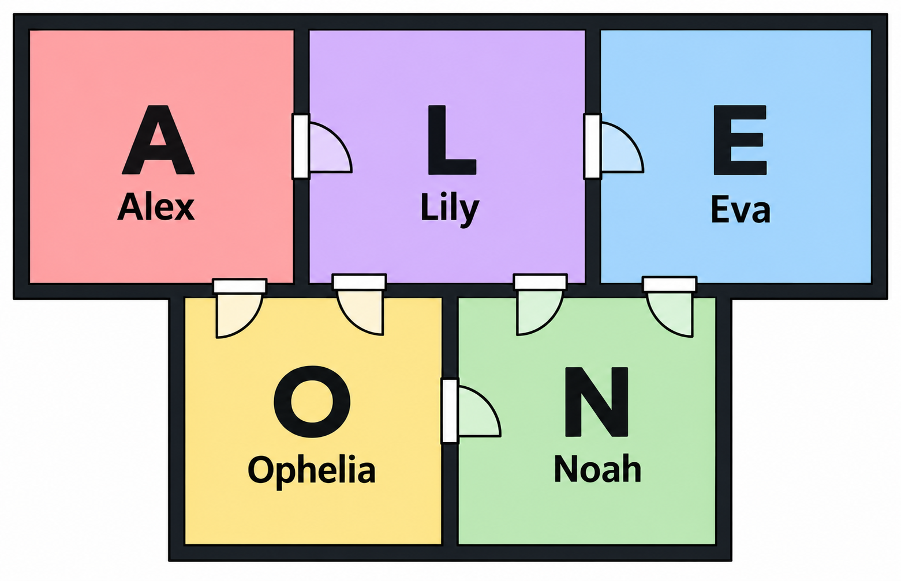

시나리오
기억을 잃은 채 낯선 우주선에서 깨어나며 시작된다. 아는 것은 여기가 릴리의 방이라는 것과, 이 우주선에 나 혼자 있다는 사실.
활동 보기
프롤로그
릴리의 방 시작
1부
→ 알렉스의 방
→ 오펠리아의 방
→ 노아의 방
→ 오펠리아의 방 재방문
→ 에바의 방
→ 릴리의 방
전환부
→ 레버를 릴리의 방 거치대에 연결 (노아의 책장 위 레버, 챙기는 시점은 자유)
→ 릴리의 방에서 진짜 이름 입력
→ 현재 상태 입력
2부
→ 알렉스의 방 2차 조사
→ 오펠리아의 방 2차 조사
→ 노아의 방 2차 조사
→ 에바의 방 부활
→ 릴리의 방 최종 문제
엔딩
→ 릴리의 방 레버
→ 엔딩


릴리의 방을 한가운데로 다른 방들이 둘러싸고 있다.
각 인물의 대표색
- 알렉스 — 빨강 원색: #E53935 / 파스텔: #F8CCCC
- 비아 — 주황 원색: #FB8C00 / 파스텔: #FFE0BD
- 오펠리아 — 노랑 원색: #FDD835 / 파스텔: #FFF3BD
- 노아 — 초록 원색: #43A047 / 파스텔: #D2EBD3
- 에바 — 파랑 원색: #1E88E5 / 파스텔: #CCE2FA
- 릴리 — 보라 원색: #8E24AA / 파스텔: #E6D3F0
전체 사건 연표 — 확정본
| 시점 | 사건 | 내용 |
|---|---|---|
| 도착 전 | 어린 시절·격리 파견 | 여러 인격이 형성된다. 릴리는 어린 시절 기억을 보관한다. 정부는 다섯 인격과 격리 사유를 알고 에바 한 명을 파견하며 다섯 방을 마련한다. 격리 사유는 인격끼리 충돌해 사고가 날 수 있다는 위험이다. 정부는 이를 위험하다고 보았지만 어차피 이용하다 버릴 생각이었기에 그대로 우주선에 태워 보냈다. 일주일 뒤 귀환은 명목뿐이었다. |
| 0일 | 도착·착륙 | 행성 도착·착륙을 날짜 계산의 기준으로 삼는다. 원래 일주일 공전·행성 탐사 후 귀환 계획이었지만 연구를 연장한다. 계획상의 일주일을 실제 착륙 전 경과일로 더하지 않는다. |
| 12일 | 기억 소실 관찰 | 오펠리아 개인 연구. 제온 투여 후 학습한 미로를 기억하지 못한다. |
| 15일 | 노아의 선외 활동·제온 노출 | 할 일 없이 지내다 답답해진 노아가 우주복을 제대로 잠그지 않은 채 밖으로 나가 제온에 노출된다. 이후 판단과 기억에 변화가 생긴다. |
| 17일 | 기억력 향상 관찰· 알렉스의 보고 | 낮은 농도의 제온이 기억·학습 능력을 강화한다. 지구에서도 합성할 수 있겠다는 판단과 함께 결과가 알렉스에게 전달되고, 알렉스는 즉시 정부에 보고하며 귀환을 요청한다. 정부는 지원하지 않고 통신을 끝낸다. |
| 25일 | 지능 향상 확인 | 반복 실험에서 실험체의 지능이 뚜렷하게 상승한다. |
| 26일 | 에바의 추가 통신· 비상 귀환 검토 시작 | 정부와의 통신으로 파견 인원 한 명·격리 파견의 진실을 확인한다. 같은 날 정부 지원 없이 돌아갈 방법을 검토하기 시작한다. |
| 27일 | 생쥐 실종 | 지능 강화 실험을 반복하던 생쥐가 사라진다. |
| 30일 | 무단 열람 확인·비공개 전환 | 노아가 연구 기록을 몰래 열람한다. 외부 접속 흔적이 없어 범인을 찾지 못한다. 이후 기록을 비공개로 전환하고 공동 연구 구역도 잠금 관리한다. |
| 31일 | 고농도 제온·뇌 활동 정지 | 비공개 개인 연구 기록. 고농도 투여 뒤 반응과 측정 가능한 뇌 활동이 멈춘다. |
| 32일 | 『행성·탈출』 프로젝트 마련 | 26일 검토 시작으로부터 6행성일 뒤. 직접 귀환하는 『탈출』(1인용 소형 탈출기)이 우선, 공개 구조 신호의 『행성』이 예비 계획이다. 탈출 엔딩에서 전원이 꺼지는 것은 우주선 본체다. |
| 33일 | 공동 연구 — 서로 다른 기억 반응 | 오펠리아·에바가 같은 실험체의 독립된 두 기억 패턴을 기록한다. |
| 34일 | 공동 연구 — 인격 관련 발견 | 제온이 새 인격을 만드는 것이 아니라 인격마다 독립적으로 작용할 수 있음을 조사한다. |
| 41일 | 공동 연구 — 인격별 반응 | 투여받았다고 인식한 인격에 효과가 집중되는 현상을 기록한다. |
| 42일 | 사람에게 적용할 위험 | 고농도 제온이 사람의 뇌 활동도 멈출 수 있다는 위험을 비공개 개인 연구 기록에 남긴다. |
| 43일 | 노아의 계획 발견·방해 결심 | 노아가 에바의 귀환 계획을 알아낸다. 자신들을 버리고 혼자 돌아가려 한다고 받아들여 먼저 계획을 막기로 결심한다. 이후 릴리의 컴퓨터(메인 컴퓨터)에 침입해 『행성·탈출』 프로젝트를 손본다. |
| 45일 | 공동 연구 — 복구 가능성·실험 기록 | 정지한 실험체에도 신경 구조가 남아 있음을 조사하고 재활성화 가능성을 검토한다. 복구 결과와 머리띠 제작은 이후의 일이다. |
| 46일 | 공동 연구 — 복구 실험 결과 | 뇌파 자극으로 뇌 활동이 멈춘 생쥐를 되살린다. 인격이 여럿인 생쥐에서도 멈춰 있던 인격이 돌아온다. 에바가 결과를 자기 폴더로 가져가 후속 검증을 맡는다. |
| 47일 | 에바의 비공개 메모 | 에바가 모두 한 사람일지 모른다는 의심을 비공개 메모에 남긴다. 결론은 내리지 않는다. 이때 에바는 생쥐를 되살린 뇌파를 사람에게도 쓸 수 있는 머리띠를 만들어 두었다. |
| 48일 | 아래 순서로 같은 날에 일어난다. | |
| 1 | 오펠리아 공격·기록 개입 | 오펠리아를 공격하고 비공개 연구 기록에 자신의 말투로 마지막 내용을 남긴다. |
| 2 | 귀환용 추진 연료 폐기 | 직접 귀환 계획을 막는다. 선내 전력·통신은 유지된다. |
| 3 | 에바·릴리 공격·제온 투여 | 공격이 이어지고 에바의 기억 소실로 연결된다. |
| 4 | 마지막 기록 작성 | 에바는 릴리의 도움으로 빠져나왔다고 인식하고 기록을 남긴다. 여러 사람의 동시 행동은 하나의 몸에서 벌어진 일에 대한 에바의 주관적 경험이다. |
| 5 | 기억 소실 | 기록을 남긴 뒤 기억을 잃고 다음 날 깨어난다. |
| 49일 | 본편 시작 | 기억을 잃은 에바가 릴리의 방에서 깨어난다. |
엔딩 이후 (책자 포함)
| 분기 | 후속 사건 |
|---|---|
| 행성 | 공개 구조 신호·좌표 송출 후 구조가 오지 않았으나 행성에 눌러앉아 살아간다. |
| 행성 + 보너스 성공 | 제온 연료 연구를 완성하고 지구로 귀환한다. |
| 탈출 | 49행성일 선택 이후 생명 유지 종료·에바의 사망으로 이어진다. |
| 탈출 후 | 사망 시점부터 센 경과 시간이다. 유성 폭풍 때 작은 유성 조각이 낸 틈으로 제온이 유입되고 노아가 돌아오는 BAD 후일담으로 이어진다. |
방탈출 시작 전
릴리의 팀원 관찰 기록
알렉산더 : 우리 팀의 팀장이야. 대부분은 그냥 알렉스라고 부르지. 뭐 대충 팀장이라면 할 만한 것들을 하시지. 임무 편성, 지휘, 그리고 정부한테 굽신거리면서 예산 받기. 특히 이곳에서는 보급이 중요하니까 정부와의 협상은 늘 바쁘신 것 같아.
그것 외에도, 우리 팀의 든든한 지지대 역할을 해 주시고 계셔. 고민이 있거나 조언이 필요할 때마다 알렉스를 찾게 되거든. 평생 없었던 아버지를 갖게 된 느낌이랄까?
하지만 요즘은 좀처럼 뵙기가 힘드네. 서재에 틀어박혀 계시는 일이 많으셔서 말이야. 저번엔 보고 싶어서 방문을 열었더니 들어오지 말라고 혼났어. 건강이 안 좋으신가 싶기도 하고…
릴리 : 바로 나지! 우주선의 보안을 맡고 있어. 우주선에 보안이 왜 필요하냐고? 어디서 어떻게 알고 접속하는지는 모르겠지만, 가끔씩 누군가 시스템에 침입하거든. 식수대 펌프라거나, 연구 보고서, 그리고… 내 컴퓨터까지. 안 들어오는 곳이 없다니깐? 에바의 조언을 받아서, 조금 특별한 보안 방식을 사용하기로 했어. 다섯 명이 모두 있어야 하게끔 말이야. 뭐, 잘못될 게 있겠어?
사실 이렇게까지 연구가 길어질지는 몰랐어. 원래는 일주일 동안 공전하면서 행성을 탐사한 뒤 지구로 돌아가는 게 임무였는데, 펠이 뭔가 발견하는 바람에 여기 남아서 좀 더 실험하기로 했어. 이 연구만 끝나면 다들 집에 돌아가서 푹 쉴 수 있겠지? 제발 그날이 곧 오기를.
오펠리아 : 우리 사랑스러운 펠. 실험 및 연구를 맡고 있지. 오면서는 심심하다고 징징댔었는데, 지금은… 연구에 완전 빠져 살아. 행성에서 제온이라는 새로운 물질을 발견했다나? 대충 들었을 때에는 치매 치료제? 뇌의 신경구조를 복구시킬 수 있다는 것 같던데… 뭐 들어서 내가 알겠냐만은.
노아 : 기계를 다루는 조종사 겸 엔지니어야. 사실 대부분 놀아. 기계가 고장 날 일도 별로 없고, 운전도 거의 자동으로 하거든. 우주선 근처로 유성 폭풍이 지나가지 않는 한… 정정할게. 이제는 대부분이 아니라 그냥 놀아. 여기 착륙한 이후로 할 게 없거든. 저번엔 너무 심심했는지 멋대로 우주복도 제대로 안 잠그고 우주선 밖으로 나가다가 죽을 뻔했어.
… 근데 요즘 조금 이상해 보여. 혼잣말도 막 하고, 가끔씩 허공을 노려보면서 웃고 있어. 뭐, 이해는 해. 우리는 여기서 뭐라도 할 수 있지, 얘는 앉아 있는 것밖에 할 게 없으니까. 그래도 뭔가 꺼림칙한 느낌이 들어. 좀 피해 다녀야겠다.
에바 펠로노르 : 음… 사실 무슨 담당인지 잘 모르겠어. 그냥 천재인 것 같아. 뭐든지 다 잘 하거든. 노아가 아플 때 대신 운전하질 않나, 펠과 같이 연구를 하질 않나… 아까도 말했지만 신규 보안 절차의 아이디어도 얘가 준 거야. 그냥 모든 일을 다 얘가 하면 되지 않을까 싶은데, 그러기에는 조금 덤벙대는 성격인 것 같긴 하더라구. 역시 사람은 완벽할 순 없나보다. 최근에는 얘도 자기 방에 틀어박혀 있더라고. 뭘 하는 거지? 물어봐도 안 알려줘… 히잉.
에바 펠로노르를 소개하는 페이지 아래에 ‘정신 차려’ 라고 휘갈겨 쓴 파란 글씨가 적혀 있다.
- 총괄) ’정신 차려’를 휘갈겨 쓴 펜도 플레이어에게 쥐어주고 들여보내면 재밌겠다는 생각
릴리의 팀원 관찰 기록이 너무 길어, 방탈출에 들어가기 전에 읽는 게 좋을 것 같다. 이후 플레이어 중 한 명의 손에 들려서 들여보낸다. 에바가 릴리의 방에서 기절하기 직전 팀원 관찰 기록 자신의 부분에 ‘정신 차려’를 휘갈겨 쓰고 손에 쥐고 기절했다는 설정.
- 문제를 풀기 위해서는 글을 자세히 읽을 필요가 없으며, 문제에 필요한 경우 표시를 해 놓았다는 안내를 한다. 다만 스토리를 이해하고 싶다면 글을 읽을 필요가 있다고 안내한다.
- 다섯 명의 등장인물이 있는 척하고 들여보낸 뒤, 프롤로그 스토리 카드의 ‘나밖에 없다. 다들 어디로 간 거지?’로 혼자라는 사실을 처음 보여 준다.
힌트폰 설정 — 릴리의 핸드폰
플레이어가 들고 다니는 힌트폰은 릴리의 핸드폰이다. 현재 해야 할 일과 다음 조사 장소를 퀘스트처럼 안내한다.
1부에는 릴리가 미리 만들어 둔 프로그램이 안전 모드를 푸는 순서를 알려 준다. 알렉스 → 오펠리아 → 노아 → 오펠리아 재방문 → 에바 → 릴리 순으로 진행에 맞춰 현재 목표가 갱신된다. 노아의 숨겨진 기록을 미리 연 경우에는 오펠리아 재방문 단계를 건너뛴다.
2부에는 비아가 핸드폰에 들어와 안내하는 연출로 바뀐다. 비아는 플레이어와 함께 확인한 기록을 근거로 다음 조사 방향을 안내한다. 방별 비아 대사는 이 휴대폰 안내와 연결하며 실제 화면·음성의 배치 시점은 대본과 맞춘다.
핸드폰에 나타나는 모습은 비아의 안내를 표현하는 연출이다. 비아가 실제 AI이거나 릴리가 만든 인격이라는 뜻은 아니며, 기존 제6인격·내면 UI 설정을 따른다.
힌트 코드 및 스토리 코드를 입력할 수 있다.
1부: 범인 찾기
릴리의 방 — 시작
플레이어는 릴리의 방에서 깨어난다. 기억은 전혀 없고, 방 안에는 ‘LILY’라고 적힌 사원증과 힌트폰이 놓여 있다. 플레이어는 자연스럽게 자신을 릴리라고 믿고 메인 컴퓨터에 접속하려 한다.
프롤로그 스토리 카드
깨어나 보니 낯선 곳이다. 기억이 아무것도 나지 않는다. 창밖에 별들이 떠다니는 걸 보니 우주선인 것 같다. 손에는 누군가의 관찰 기록이 들려 있고, 책상엔 사원증이 놓여 있다. 그런데 아무리 둘러봐도 나밖에 없다. 다들 어디로 간 거지?
총괄 메모: ‘나’를 파란색으로 해도 될 것 같음
스토리카드 0
컴퓨터 쓰기 전에 사원증부터 챙겨!
남의 걸 잘못 집어 들지만 말고. 나중에 또 쓸 일이 있을 테니 아무 데나 던져두지도 말고!
— 릴리
메인 컴퓨터에 이름을 입력하면 1차 본인 확인 절차가 시작된다.
스토리카드 1
이름만 안다고 내 기록을 전부 열 수 있으면 보안이 아니잖아?
본인 확인까지 통과해야 접속할 수 있게 해 뒀지롱.
…설마 내가 이걸 까먹진 않겠지?
— 릴리
플레이어는 본인 확인에 실패하고, 메인 컴퓨터는 안전 모드에 들어간다. 안전 모드를 풀려면 다섯 팀원의 승인이 정해진 순서대로 필요하며, 플레이어는 각 팀원의 방을 조사해 승인 코드를 얻어야 한다.
릴리의 핸드폰에서는 안전모드 가동을 감지하고 앞으로의 진행 순서를 나타내게 된다.
대사
틀렸습니다. 릴리 님이 가장 좋아하는 동물은… 플라나리아입니다.
본인 확인에 실패하였습니다.
보안 절차에 따라 안전 모드를 가동합니다.
메인 데이터베이스에 대한 접근이 제한됩니다.
안전 모드를 해제하려면 등록된 팀원들의 승인이 필요합니다.
각 팀원의 방에서 승인 코드를 입력해 주십시오.
(컴퓨터 모니터에 다섯 개의 폴더가 원형으로 나타나고, 가운데의 메인 컴퓨터가 사슬로 묶여 있다.)
(릴리의 핸드폰에 사전 등록된 안내 프로그램이 열린다. 아래 문구는 휴대폰 화면에 표시한다.)
안전 모드 감지
릴리가 미리 등록해 둔 복구 안내를 시작합니다.
현재 목표: 알렉스의 승인 확보
(우주선 지도에서 알렉스의 방이 하이라이트된다)
알렉스의 방 — 통신 기록
스토리카드 2
항로를 확인하는 일은 남에게 맡기지 않는다. 목적지만 아는 것과 길을 아는 것은 다르니까.
복잡한 항해일수록 별을 기준으로 삼았다. 상황이 달라져도, 내가 확인한 좌표까지 달라지지는 않더군.
내 기록의 암호에도 항법 자료를 썼다. 매일 확인해 온 것을 잊을 일은 없을 테니까.
별자리 필름은 다 쓰고 나면 반드시 제자리에 둘 것. 항법 자료는 이 방 밖으로 내보내지 않는다.
— 알렉스
플레이어는 제일 먼저 알렉스의 방으로 들어가 알렉스의 문제를 풀어 승인 코드를 얻는다.
알렉스 방의 태블릿에 승인 코드를 입력하면 알렉스의 폴더가 열린다. 폴더에는 통신 기록과 현재 소모량이 있다.
알렉스 님의 승인 코드 입력 완료. 알렉스 님의 데이터베이스에 접근이 가능합니다.
알렉스의 통신 기록
제 17행성일
α : 여기는 알파. 여기는 알파.
Ω : 확인.
α : 제온 연구에 중대한 진전이 있었다. 제온 분자의 합성 가능성이 확인되었으며, 지구에서도 재현 가능한 수준으로 보인다. 관련 연구 보고서를 전송하겠다.
Ω : 수신하겠다.
α : 추가로 보고한다. 현재 임무 목표는 달성된 것으로 판단되므로 알파 팀 전원의 지구 귀환을 요청한다.
Ω : (정적)
α : 오메가?
Ω : 보고서는 확인 중이다.
α : 귀환 요청에 대한 답변을 바란다. 장기 체류로 인한 물자 소모가 예상보다 크다. 보급선 또는 귀환선 배정이 필요하다.
Ω : 알파, 그동안 (치지직) 수고 많았다.
α : 방금 송신이 끊겼다. 다시 말해 달라.
Ω : 통신 종료하겠다.
α : 아직 통신이 완료되지 않았다. 오메가, 응답하라.
α : 오메가?
α : 여기는 알파. 귀환 요청에 대한 답변을 바란다.
α : 여기는 알파. 귀환 요청에 대한 답변을 바란다.
α : 여기는 알파. 귀환 요청에 대한 답변을 바란다.
α : 여기는 알파. 여기는 알파.
α : 여기는알파여기는알파여기는알파여기는알파여기는알파여기는알파여기는알파여기는알파여기는알파여기는알파여기는
[이후 응답 말소됨]
현재 소모량
현재 소모량
🫁 산소 👤 1인분
🍞 식량 👤 1인분
💧 물 👤 1인분
(자원마다 소모 기준을 사람 아이콘 하나로 표시한다. 설명 문구는 붙이지 않는다.)
기록에는 알렉스가 정부와 통신했고, 제온 연구 성과를 보고한 뒤 귀환을 요청했지만, 이후 정부의 응답이 끊겼다는 내용이 담겨 있다.
플레이어는 정부가 알파 팀을 모종의 이유로 버렸다는 것을 알게 된다. 이후 다음 잠금을 해제하기 위해 오펠리아의 방으로 이동한다.
오펠리아의 방 — 제온 연구 보고서
플레이어는 오펠리아의 방으로 이동한다. 오펠리아의 승인 코드는 스토리카드로 주어진다. 실험실 의자 아래에는 끊긴 밧줄 한 묶음이 떨어져 있다(가능하면 배치). 문제와는 관계없는 소품이며, 마지막 기록을 읽은 뒤에는 에바와 릴리가 묶여 있던 자리로 이어진다.
스토리카드 3
암호는 REPORT야. 연구 보고서는 누구나 접근 가능해야 하니까 우선 공개해 놓으려고. 그렇다고 너무 뒤져보지는 말고!
— 오펠리아
오펠리아 님의 승인 코드 입력 완료. 오펠리아 님의 데이터베이스에 접근이 가능합니다.
이를 입력하여 잠금을 푼 오펠리아의 폴더에는 제온 연구와 관련된 보고서가 남아 있다.
제온 연구 보고서
제12행성일
미로를 충분히 학습한 생쥐에게 제온을 투여했다. 투여 후 생쥐는 이전에 학습한 길을 기억하지 못하고 같은 통로를 반복해서 돌아다녔다. 관찰이 끝날 때까지 출구를 찾지 못했다.
일정 농도의 제온은 기억을 소실시키는 것으로 보인다.
제17행성일
이번에는 제온의 농도를 낮춰 실험했다. 예상과 반대로 생쥐가 빠르게 미로를 학습했다. 며칠 뒤 같은 미로에 넣었을 때에도 경로를 정확히 기억했고, 길을 헤매는 모습은 없었다.
적절한 농도의 제온은 기억과 학습 능력을 강화하는 것으로 보인다. 사람에게도 같은 효과가 나타난다면 치매와 같은 기억 질환의 치료제로 사용할 수 있을지도 모른다. 분자 구조도 단순한 편이라, 지구에서 합성하는 것도 어렵지 않아 보인다. 관련 연구 결과를 알렉스에게 전달했다.
제25행성일
동일한 실험체를 대상으로 기억 강화 실험을 반복했다. 이제는 학습 속도뿐 아니라 지능의 뚜렷한 상승도 관찰된다.
흥미롭군. 지속 관찰 대상으로 지정하고 주기적으로 실험해 보자.
제27행성일
미로 실험을 진행하려 했지만, 기억 강화 실험을 반복하던 쥐가 사라졌다. 사육함 주변을 탐색했으나 찾지 못했다.
음… 다른 애들에게는 비밀로 해야겠다.
제30행성일
누군가 내 연구 기록을 열어봤다. 외부 침입이라고 생각했지만, 릴리가 확인한 결과 외부 접속 흔적은 없었다.
앞으로의 기록은 비공개로 전환해야겠다. 괜한 걱정이었으면 좋겠다.
플레이어는 연구 보고서 안의 규칙을 찾아 비밀번호를 보고서의 암호 입력 칸에 입력한다.
연구 보고서의 잠금이 해제되었습니다. 비공개 연구 기록을 열람할 수 있습니다.
연구 기록함에는 공개 연구 DB에는 등록되지 않은 비공개 기록이 들어 있다.
제온 연구 비공개 기록
제31행성일
제온의 안전 범위를 확인하기 위해 농도를 높였다. 실험체는 점차 움직임과 외부 자극에 대한 반응을 잃었고, 최종적으로 측정 가능한 뇌 활동이 사라졌다. 고농도의 제온이 뇌를 파괴한 것처럼 보인다.
제42행성일
제온은 생각했던 것보다 훨씬 위험하다. 단순히 기억에 영향을 주는 것이 아니라, 뇌의 신경 활동 자체에 직접적인 영향을 주고 있다.
많은 양이라면 사람의 뇌도 멈출 수 있다는 뜻이다.
제48행성일
연구 결과를 왜 이렇게 답답하게 써 놨어? 직접 해 보면 되는 걸 말야.
제온 양을 조금씩 늘리니까 진짜로 반응이 점점 느려지더니 뇌가 멈추네.
역시 너는 대단한 연구원이야. 결과는 내가 잘 쓰도록 할게.
48행성일의 기록은 오펠리아가 아닌 다른 사람이 쓴 것처럼 보인다. 31·42행성일의 초록 글자도 노아가 남긴 표시다. 노아는 30행성일 이후에도 수시로 보고서를 열람했고, 결국 비공개 기록의 암호까지 뚫어 그 안에 자신의 비밀 글을 써 두었다.
제온의 위험성을 확인하고 오펠리아가 누군가에게 살해됐다고 추정한 뒤, 노아의 방으로 이동한다.
노아의 방 — 빈 기록
노아의 방에는 책장이 하나 놓여 있다.
책장 맨 위에는 레버 하나가 놓여 있고, 노아의 포스트잇이 붙어 있다. 이 레버는 에바가 만든 『행성·탈출』 프로젝트의 최종 제어 레버로, 노아가 마지막으로 손을 댄 뒤 자기 방에 가져다 둔 것이다. 문제 4와는 관계없는 소품이며, 플레이어는 지금 챙기든 에바의 방을 본 뒤 다시 와서 챙기든 상관없다.
포스트잇 — 노아의 레버
건드리지 마라.
2부 노아의 기록에서 ‘이제 장치를 작동시키면, 재미있는 일이 벌어질 거야’를 읽을 때, 이 레버가 노아의 방에 있었던 이유가 이어진다.
스토리카드 4
할 게 없어. 정말 아무것도. 처음엔 좀 쉬면 좋겠다 싶었는데, 매일 이러고 있으니까 너무 지루하네.
결국 방에 있는 책이나 읽고 있어. 읽는 동안에는 시간이 좀 가니까. 다 읽고 나면 또 뭘 해야 하나.
그래서 계정 암호도 책을 이용해 만들었어. 요즘 매일 들여다보는 게 책이니 잊어버릴 일은 없겠지.
— 노아
플레이어는 노아의 방에 숨겨진 승인 코드를 얻어 노아 방 태블릿에 입력한다.
노아 님의 승인 코드 입력 완료. 노아 님의 데이터베이스에 접근이 가능합니다.
노아의 기록은 비어 있으며, 대신 노아가 자신의 정보를 다른 곳에 옮겨 두었다는 메모만 남아 있다.
내가 가진 정보는 다른 곳에 옮겨 놨다. 찾을 생각 말도록.
그러나 노아가 다음 단계에 추가 잠금을 걸어 두어, 에바의 방에 불이 들어오지 않는다.
오펠리아의 방에서 ‘최적해’를 미리 찾아 노아의 숨겨진 기록을 이미 열어 본 팀이라면, 노아는 자기 계산이 틀어졌다는 것을 알아차리고 잠금은 걸리지 않는다. 이 경우 오펠리아 재방문 없이 에바의 방으로 간다.
대사
(노아의 숨겨진 기록을 이미 열어 본 경우)
내가 가진 정보는 ‘최적해’ 안에 넣어 뒀다. 그걸 못 찾으면 여기서 끝이야.
…뭐야. 벌써 열어 봤잖아?
재미없게.
추가 잠금이 해제되어 있습니다. 에바 님의 승인 단계로 진행합니다.
오펠리아의 방 재방문 — 노아의 숨겨진 기록
다시 오펠리아의 방으로 돌아간다. 플레이어는 비공개 기록에서 ‘최적해’를 찾아 입력하고, 노아의 숨겨진 기록을 연다.
노아 하손 비공개 기록
이걸 용케 찾아보는 사람이 있다니… 축하한다. 어차피 소용은 없겠지만, 여기까지 왔으니 뒤쪽 잠금은 풀어 주지.
할 게 없었다. 할 게 아무것도 없었다. 그래서 다른 사람을 관찰하는 취미가 생겼지. 그러다 보니 무슨 생각을 하는지 보이더군. 헛소리처럼 들리겠지만, 나에겐 정말로 보였어. 알렉스와 에바가 무언가 숨기고 있더군. 그들이 없을 때 방을 뒤져서 많은 사실을 알 수 있었어.
정부는 우릴 버렸다. 연료도, 보급도 더 이상 오지 않는다. 제온을 지구에서도 합성할 수 있다는 걸 알자, 우리를 되찾을 이유가 사라진 거야.
에바는 이를 숨기고 우주선의 탈출기를 이용해 지구로 돌아가는 계획을 짜고 있었다. 『탈출』 프로젝트라고 부르더군. 우리에게 말하지 않고 몰래 준비하던 이유가 뭔지 아나? 그 여자는 우리를 버리고 혼자 돌아갈 생각이었던 거다.
배신당하는 건 싫은데 말이지…
내가 먼저 선수를 쳐야겠다.
노아는 우연히 제온에 노출되어 어렴풋이 다른 인격들의 생각을 읽을 수 있게 된다.
- 작중에서는 노아가 다른 인격의 생각을 단편적으로 알아차리고, 그것을 자신을 해치려는 의도로 해석하는 모습으로 표현한다. 별도의 진단명을 원인으로 덧붙이지 않는다
- 설정은 책자 ‘각 캐릭터들이 상징하는 성격 / 가치관 / 관계’의 노아 항목에서 소개한다.
수상하다고 생각하는 사람들의 방을 뒤져 정부에게 버림받음을 알아냈으며, 이후 에바의 방에서 『행성·탈출』 프로젝트를 발견했다. 노아는 에바가 모두를 버리고 혼자 탈출하려 한다고 판단한다. 결국 그는 에바를 막기 위해 자신이 먼저 움직이겠다고 결심한다.
이 시점에서 플레이어는 노아가 범인이라는 결론에 도달한다. 노아의 숨겨진 기록을 확인하면 추가 잠금이 풀리고, 에바의 방으로 이동한다.
추가 잠금이 해제되었습니다. 에바 님의 승인 단계로 진행합니다.
에바의 방 — 『행성·탈출』 프로젝트
에바의 방에는 『행성·탈출』 프로젝트와 관련된 단서가 남아 있다. 퍼즐을 풀어 에바의 계획을 확인한다.
스토리카드 6
이게 도대체 뭐냐고? 이런 것도 하나쯤은 있어야지.
머릿속이 서로 다른 생각들로 시끄러울 때, 엉뚱한 농담을 하다 보면 생각지도 못한 게 떠오르곤 했어.
심각한 상황에서도 이걸 보면 늘 웃음이 나서 좋아.
— 에바
에바 방 태블릿에 승인 코드를 입력하면 잠금이 풀리고 에바의 폴더가 열린다.
에바 님의 승인 코드 입력 완료. 에바 님의 데이터베이스에 접근이 가능합니다.
폴더에는 에바가 준비하던 탈출 계획에 대한 메모와 『탈출』 프로젝트 설계, 문제 9를 암시하는 메모가 있다.
에바의 메모 (음성으로도 나오면 좋을 듯)
며칠 전, 대장의 서재에 몰래 들어갔어. 등 뒤에서 놀래켜 줄 계획이었지. 놀란 건 나였지만.
살금살금 다가갔을 때, 대장은 심각한 표정으로 무언가를 하고 있었어. 여기는 알파, 여기는 알파… 답장이 오지 않을 메세지를 반복해서 입력하고 있었지.
자초지종을 대장에게서 듣고서는 생각했어.
이대로 있을 순 없다고.
그 이후로는 쭉 이곳을 나갈 방법만 생각했고, 마침내 방법을 찾아냈어.
딱 1인 정도를 태워서 지구로 날려보낼 수 있을 만큼의 연료가 남았어. 나는 이걸 사용해서 지구로 돌아가 다른 사람들의 송환을 도우려고 해. 이름은 그냥 『탈출』 프로젝트로 붙였어.
음… 우선은 조용히 있는 게 낫겠지? 대장 말고 다른 사람들은 버림받은 걸 모르기도 하고… 완성되면 그 때 알리자.
근데 만약 이게 실패하면? 그때를 대비해서 계획을 하나 더 만들어 둬야겠어.
『탈출』 프로젝트는 메인 컴퓨터의 메인 폴더에 넣어 놓을 생각이야. 혹여나 사건이 발생하더라도 다른 사람들이 사용할 수 있도록 말이지. 릴리가 알아서 하겠지 뭐.
『탈출』 프로젝트 설계
『탈출』 프로젝트 — 1인용 소형 탈출기
남은 귀환용 연료를 탈출기에 옮겨 담는다. (1인분)
레버를 메인 컴퓨터 옆 거치대에 꽂고 아래로 내리면, 탈출기가 점화와 함께 우주선에서 분리된다.
(레버 그림 — 손잡이 둘레에 눈금 링이 달려 있다.)
※ 레버 그림은 실제 레버 소품을 만든 뒤, 그 모양을 보고 그린다.
에바의 메모 (2)
팀원들의 이름을 잘 조합하면 흥미로운 단어가 된다는 걸 깨달았어. 오묘하네.
음, 근데 이걸 어디에 써먹지?

에바의 방에는 레버 모양으로 폼이 파인 빈 상자가 있고, 상자에는 에바의 쪽지가 붙어 있다. 플레이어는 노아의 책장 위에서 본 레버가 이 상자의 레버라는 것을 떠올리고, 릴리의 방으로 가져가 메인 컴퓨터 옆 거치대에 꽂는다. 레버를 챙기는 시점은 정하지 않는다.
쪽지 — 에바의 레버 상자
『행성·탈출』 프로젝트 레버.
실행할 땐 이 레버를 가져가면 돼. 릴리 방 메인 컴퓨터 옆 거치대에 꽂을 것!
— 에바
릴리의 방 — 마지막 승인과 기록
마지막으로 릴리의 방을 조사하여 승인 코드를 얻는다.
스토리카드 7
사원증은 볼 때마다 딱딱해서 싫더라. 어차피 매일 들고 다닐 거면 조금은 내 물건 같아야 하지 않겠어?
그래서 내 건 좀 특별하게 디자인했어. 이름하고 사진만 박힌 카드보다는 마음에 드네.
내 암호에도 이 사원증을 쓰기로 했어. 중요한 건 늘 챙기는 물건에 맡겨 두는 편이 안심되거든.
— 릴리
메인 컴퓨터의 릴리 폴더에 승인 코드를 입력하면 다섯 팀원의 승인이 모두 확인되고 안전 모드가 해제된다.
릴리 님의 승인 확인.
등록된 다섯 팀원의 승인이 확인되었습니다. 안전 모드를 해제합니다.
잠금이 풀리면 곧바로 릴리의 폴더 안으로 들어간다. 폴더에는 오래된 기억.txt와 누군가의 마지막 기록이 들어 있다.
오래된 기억
에바가 요즘 어릴 적 이야기를 자주 꺼낸다.
잘 기억나지 않는다면서, 며칠 뒤에 같은 걸 또 묻곤 한다.
나는 기억하는데.
요즘은 어디까지 말해도 괜찮을지 모르겠다.
— 릴리
마지막 기록
아, 큰일났네.
지금 가까스로 빠져나와서 릴리의 컴퓨터로 글 남기는 중인데, 어떻게 될지 모르겠어.
오펠리아와 연구하기로 해서 가 봤는데, 이미 싸늘한 주검으로 바닥에 널브러져 있더라고.
오펠리아의 실험 보고서를 열려고 시도하다, 뒤에 숨어 있던 누군가에게 머리를 얻어맞고 그대로 기절해 버렸지.
정신을 차려 보니까 릴리랑 나, 둘 다 오펠리아의 실험실에 묶여 있었어.
노아가 혼자만 살겠다고 도망치려 한 배신자를 잡았다느니 하면서 정신나간 소리를 지껄이고 있더라고.
어디서 주워들은 건지는 모르겠지만, 내 계획을 멋대로 오해하고 있었어. 아무리 설명하려고 해도 노아는 들은 척도 하지 않았어.
“그 계획대로 해 봤자 못 돌아가.” 그 말만 되풀이할 뿐이었지. 이미 어딘가 나사가 풀려 버린 것 같았고.
그러더니 숙청이 필요하다면서, 노아는 우리에게 치사량에 가까운 제온을 주사하기 시작했어.
머리가 몽롱해지고, 그렇게 삶을 포기하려고 할 때쯤 릴리가 작게 속삭였어.
내 손 바로 옆에 실험용 메스가 떨어져 있다고.
노아는 자기 혼자 신나서 떠드는 데만 정신이 팔려 있었지.
그렇게 재빨리 메스를 들어 밧줄을 끊고, 릴리도 풀어주려고 할 때쯤 들키고 말았어. 달려드는 노아를 뿌리치고 도망쳐 온 곳이 바로 이 곳, 릴리의 방이야.
이상하게도 노아는 더 쫓아오지 않았어. 그런데 목소리가 계속 들려. 꼭 바로 옆에서 말하는 것처럼.
“그 계획대로 해 봤자 못 돌아가.”
그게 무슨 뜻일까. 일단 한숨 돌리고 상황부터 정리해야 할 것 같네.
하지만 사실, 이미 늦었을 수도 있지. 제온이 내 혈관을 타고 점점 퍼져 나가는 게 느껴져. 몸이 말을 안 들어서 여기서 한 발짝도 못 움직이겠어.
이대로 죽을지도 모르겠네. 뭐, 행운을 빌어 보는 수밖에 없겠지.
— 에바노아가 에바와 릴리를 공격했다는 정황과, 귀환 계획에 손을 썼다는 정황이 릴리의 방에서 드러난다. 기록을 남긴 에바는 노아에게서 가까스로 도망쳐 릴리의 방까지 왔고, 그 자리에서 한 발짝도 움직이지 못했다. 그런데 지금 이 방에는 플레이어밖에 없다. 릴리는 아마 죽었으며, 플레이어는 기억을 잃은 채 릴리의 방에서 깨어난 에바였던 것이다.
릴리의 폴더에서 뒤로가기를 누르면 메인 컴퓨터를 묶고 있던 사슬이 풀리고 안내 음성이 나온다.
메인 데이터베이스에 접근이 가능합니다.
플레이어가 메인 데이터베이스 폴더를 직접 열면, 에바의 메모대로 프로젝트 실행 장치가 들어 있다. 메모에서는 『탈출』이었던 이름이 여기서는 『행성·탈출』로 되어 있다.
전환부
릴리의 방 — 진짜 이름 입력
메인 컴퓨터에서 『탈출』 프로젝트를 실행한다. 시스템은 『탈출』 프로젝트 절차를 진행하기 전 마지막 신원 확인을 요구한다.
플레이어는 지금까지 자신을 릴리라고 믿었지만, 여러 단서를 통해 진짜 이름이 에바임을 깨닫고 입력한다. 시스템은 에바 펠로노르의 신원을 확인하려 한다.
『탈출』 프로젝트 실행을 위해 실행자의 신원을 확인합니다.
안녕하세요? 이름을 입력해 주세요.
스토리카드 8
나는 누구지?
에바가 아닌 다른 팀원의 이름을 넣으면 확인 화면은 열리지만, 알렉스·노아의 이름에서는 저절로 오답이 입력되고 오펠리아·릴리의 이름에서는 아무것도 입력되지 않는다.
1부에서는 누군가 시스템에 침입한 것처럼 보이지만, 실제로는 깨어 있는 인격(알렉스·노아)은 몸이 스스로 입력하고, 활동이 멈춘 인격(오펠리아·릴리)은 아무것도 입력하지 못한 것이다.
에바 님, 반갑습니다. 실행자 확인 질문이 있겠습니다.
스토리카드 9
좋아하는 단어 하나를 고르라니 생각보다 어렵네. 오늘 마음에 드는 말이라고 내일도 그럴 거라는 법은 없으니까.
한참 고민하다가 결국 익숙한 사람들을 떠올렸어. 여기에서 보내는 하루하루에 빠지지 않는 이름들이니까.
아무 의미 없는 숫자보다는 낫겠지. 나중에 이 질문을 다시 보면, 답을 정하던 지금의 기분도 같이 생각났으면 좋겠어.
— 에바
질문: 에바 님이 가장 좋아하는 단어는 무엇인가요?
(플레이어는 다섯 인물의 첫 글자, ALEX, LILY, OPHELIA, NOAH, EVA를 조합해 ALONE을 입력한다.)
대사
본인 확인이 완료되었습니다. 『탈출』 프로젝트를 실행합니다.
탈출 준비 완료.
최종 제어 레버를 아래로 내려 주십시오.
플레이어가 레버를 아래로 내리는 순간, 탈출이 시작되기 직전 화면이 비정상적으로 멈추며 음성이 재생된다.
(스토리상은 완전히 내리기 전에 비아가 나타난 거지만, 작동상으로는 레버 내린 트리거로 비아가 나타남)
너가 정말로 바라는 게 그거야?
탈출 절차가 중단되었습니다. 최종 제어 레버가 비활성화되었습니다.
릴리의 방 — 비아 등장
이후 화면에 주황색 V자가 나타난다.
대사
보호 시스템 로딩 중… 로딩 완료.
안녕! 나는 Virtual Entity AI. 줄여서 V.E.A. 그냥 비아라고 불러.
릴리가 만든 도우미 프로그램이야. 탈출 절차가 시작되면 깨어나게 되어 있어. 뭔가 하던 중이었던 것 같은데… 미안하게 됐네. 내가 깨어나면서 실수로 꺼 버렸거든.
뭐라고? 다시 켜 달라고?
방금 깨어난 프로그램한테 너무 많은 걸 요구하는 거 아니야?
…그 전에 확인할 게 있어.
이 우주선에는 아직 너가 모르는 것들이 남아 있거든.
그걸 전부 보고 나서도 같은 생각이면… 그땐 말리지 않을게.
(정적)
왜 이래, 한 번 살펴보고 싶지 않아?
우선 알렉스의 방에 다시 가 보지 않을래? 뭔가 남아 있는 것 같거든.
릴리 서랍에 열쇠가 하나 있을 거거든? 그걸 챙겨 가.
(서랍에서 기존 열쇠·열쇠고리 소품을 발견하고 챙긴다.) ※ 최종 위치는 배치 때 결정
비아 연출 기준 — 정체 공개 전후
비아는 ALONE 입력 뒤 에바가 레버를 아래로 내리는 순간 생긴 인격이다. 릴리가 만든 프로그램이라는 소개는 비아의 위장이다. 실제 1부 안내 프로그램과 구분하며, 휴대폰 속 비아와 주황색 V는 에바가 인식하는 내면 연출로 표현한다. 비아가 우주선 시스템을 해킹하거나 실제 파일을 임의로 바꾸는 능력을 가진 것은 아니다.
비아는 에바의 기억을 부분부분 가지고 있으며, 플레이어가 의심하지 않고 자신을 AI라고 믿게끔 확인된 기록과 눈앞의 단서를 근거로 안내한다. 잠긴 기록의 내용이나 속마음을 처음부터 아는 것처럼 말하지 않는다. 레버를 끝까지 당기기 직전 멈춘 장면은 에바가 실행을 중단한 순간을 표현하며, ‘탈출 절차가 시작되면 깨어나게 되어 있다’는 말은 비아의 위장이다.
알렉스에게 무심코 대답함 → 노아가 그 반응을 지적함 → 돌아온 오펠리아의 말에 박자를 맞춰 반응하면서도 끝까지 못 듣는 척함으로 복선을 쌓는다. 정체 공개 때 들리지 않는 척한 이유, 프로그램이라는 거짓말, 실행을 멈춘 것이 자신이었다는 사실을 함께 밝힌다. 멈춘 이유는 비아 자신도 모르는 느낌으로만 말하고, 실제 이유는 레버 앞 마지막 단계의 비아 대사와 책자에서 드러난다.
LOVE 입력 이후 레버 재활성화 안내는 회색 시스템 음성으로 구별한다. 비아가 시스템 권한으로 정답을 바꾸거나 레버를 켜는 연출로 보이지 않게 한다.
이 지점부터 2부가 시작된다.
2부에서는 릴리의 핸드폰에 비아가 들어가 다음 진행을 표시해 준다.
2부: 진실 복구
알렉스의 방 2차 — 차단된 정부 기록
비아는 알렉스의 방을 다시 조사하라고 안내한다. 알렉스의 방에 들어가자 알렉스의 환청이 나온다.
대사
(들어가자마자) 에바.
(정적)
에바. 돌아가. 여기는 더 이상 볼 것이 없네.
왜 그래? 환청이라도 들리는 거야? 제온을 너무 많이 마셨나 본데.
그나저나, 내가 흥미로운 사실을 하나 알려줄까?
그러지 마라.
사실 저 채팅에서 말소된 부분, 완전히 지워진 게 아니야. 암호만 찾으면 복구할 수 있어. 저어기 금고 보여? 저기에 풀 수 있는 단서가 담겨 있는 것 같은데.
그러지 말라니까.
한 번 풀어볼래? 재밌겠다!
나는 분명 경고했네.
(이후 정적)
스토리카드 10
보고서를 쓰려 했지만 문장으로는 정리되지 않았다. 가능한 방법을 적고, 관계가 있는 생각끼리 선으로 이었다.
항로를 그릴 때처럼 정리하면 다음에 무엇을 해야 할지 보일 줄 알았다. 내게는 가장 익숙한 방식이니까.
이 기록의 암호는 그 끝에 남은 생각으로 정했다. 다른 이들에게 보고할 문서는 아니다. 금고에 넣어 둔다.
— 알렉스
이후 암호를 풀면 차단되었던 에바와 정부의 추가 통신 기록을 복구하게 된다. 복구된 기록은 1부 통신 기록의 ‘[이후 응답 말소됨]’ 아래에 이어서 나타난다.
알렉스의 통신 기록 2부
제 26행성일
α : 안녕하세요? 알파 팀의 에바라고 합니다. 제온에 대한 치명적인 사실을 알아냈습니다. 합성을 위해서는… [더보기]
α : 이봐요. 수신한 거 채팅창에 다 뜨는데. 왜 읽씹이야.
Ω : 알파의 임무 목표는 달성되었다.
α : 왜 우리를 버린 거죠? 이런 데에 유능한 우주비행사 다섯을 버릴 만큼 돈이 남아도는 것도 아닐 텐데.
Ω : 하… 내가 이럴 줄 알았지.
Ω : 이봐, 『알파』 프로젝트의 파견 인원은 1명이다.
α : 무슨 소리죠? 맨 처음에 장난친 건 미안하지만, 그걸 똑같이 받아치는 그쪽도 유치한데요.
Ω : 더 이상의 잡담은 없다. 귀환 요청은 반려한다.
α : 이유라도 말해 줘요. 우리가 뭘 그렇게 잘못했다고?
Ω : 해당 인원은 임무 이전 정신 감정에서 격리 판정을 받았다. 지구로의 복귀는 불가하다.
α : 정신 감정이요? 그래서 그게 누군데요.
Ω : 본 통신 기록은 말소한다. 이후 알파 채널에 대한 응답을 중지한다.
α : 오메가.
Ω : 통신 종료.
α : 오메가, 제발요.
α : 여기는 알파. 여기는 알파.
α : 여기는 알파. 아직 살아 있어요. 제발 응답 좀 해 주세요.
α : 여기는 알파.
대사
…잠깐. 파견 인원이 한 명이라는데?
(정적)
이상하네. 알렉스, 릴리, 오펠리아, 노아, 에바. 다섯 명 아니었어?
에바. 더 읽지 마.
어? 또 뭐 들려? 흐음. 더 수상한데.
에바, 저 기록은 믿을 필요 없다. 정부가 우리를 버렸다는 건 이미 알고 있잖아.
그런데 좀 이상하지 않아? 다섯 명을 보냈는데, 기록에는 한 명이라고 적혀 있잖아.
그만해.
알았어, 알았어.
(잠시 정적)
…파견 인원이 한 명이라. 거기에 너는 계속 없는 사람 목소리까지 듣고 있고. 아까 농담처럼 말하긴 했는데, 진짜 제온 때문일 수도 있겠네.
오펠리아의 보고서에 제온이 뇌에 영향을 준다고 적혀 있었지? 그쪽을 다시 확인해 보자.
오펠리아의 방 2차 — 제온 공동 연구 기록
(금고를 열어 보면 7세그먼트 문제지와 스토리카드 11이 들어 있다.)
스토리카드 11
내 개인 기록하고 공동 연구 기록은 잠금을 따로 두자. 같이 한 연구인데 나 혼자만 알아보는 암호를 쓰는 건 좀 그렇잖아.
그럼 실험 장비에 달린 디지털 패널 같은 건 어때? 나는 그런 단순한 모양으로 글자를 만드는 게 재밌더라.
좋아. 암호에 쓸 말은 우리가 이 연구를 계속하는 이유로 정하자. 가설이 전부 빗나가는 날에도 잊지 않도록 말야.
— 오펠리아·에바
대사
오펠리아가 너랑 공동 연구를 했다네?
이거 풀어서 아까 암호 넣는 곳에 넣어보면 되겠다.
플레이어는 오펠리아의 방에서 아직 열람하지 못한 공동 연구 구역을 조사한다.
플레이어는 문제 11의 7세그먼트를 풀어 ‘HEAL’을 오펠리아의 보고서 암호 입력칸에 입력하고, 공동 연구 기록을 연다.
개인 연구와 구분하기 위해 오펠리아 그린과 에바 펠로노르의 공동 연구 기록은 따로 모아 두었다. 무단 열람이 확인된 이후에는 해당 구역에도 잠금을 적용했다.
제온 공동 연구 기록
제온 공동 연구 기록
공동 연구 | 오펠리아 그린, 에바 펠로노르
열람 등급 | 비공개
제33행성일 — 이상 반응
같은 생쥐로 미로 실험을 반복했는데, 결과가 날마다 다르다. 어떤 날은 경로를 정확히 기억하고, 어떤 날은 처음 보는 미로처럼 헤맨다.
기억 검색 장치로 확인해 보니, 서로 다른 학습 이력을 가진 기억 패턴 두 개가 번갈아 나타나고 있었다. 편의상 이를 각각 ‘인격’이라 부르기로 했다.
이전 기록을 보았을 때, 제온 때문이 아닌 원래 성질로 추정된다. 다중인격 생쥐라니, 신기하군.
제34행성일 — 다음 실험
두 인격이 제온에도 다르게 반응할까?
투여한 뒤, 어느 인격이 투여 순간을 기억하는지 함께 확인하기로 했다.
제41행성일 — 인격별 반응
기억이 소실될 정도로 투여한 후, 미로에 넣어 보았다. 투여 순간의 인격만 미로를 잊었고, 다른 인격은 그대로 길을 찾았다.기억 강화 실험과 고농도 실험에서도 같았다.
제온은 자신이 투여받았다고 인지한 인격에만 작용한다.
제45행성일 — 복구 가능성
뇌 활동이 멈춘 과거 실험체들을 다시 조사했다. 반응은 완전히 멈췄지만 기억을 구성하던 신경 구조는 그대로 남아 있었다.
남아 있는 구조를 다시 깨울 수 있다면, 멈춘 반응도 되찾을 수 있지 않을까?
복구 실험
옮겨짐
대사
오, 열렸다. 빨리 읽어 봐. 나 이런 거 좋아하나 봐.
(제온 공동 연구 기록이 나타난다. 비아가 짚는 부분이 하이라이트된다.)
(41일 ‘제온은 자신이 투여받았다고 인지한 인격에만 작용한다.’ 하이라이트)
한 생쥐 안에 인격이 여럿 있으면, 제온은 자기가 맞았다고 기억하는 인격한테만 효과가 있대.
그럼 나머지 인격은 멀쩡하다는 거잖아? 신기하다.
(45일 ‘남아 있는 구조를 다시 깨울 수 있다면, 멈춘 반응도 되찾을 수 있지 않을까?’와 연결 기록 ‘[제온 유발 뇌사 신경망의 복구 실험] — 옮겨짐’ 하이라이트)
이건 복구 실험이네. 멈춘 뇌라도 구조가 남아 있으면 다시 깨울 수 있을지도 모른대.
결과가 너무 궁금한데… 파일이 옮겨졌다고? 누가?
아, 오펠리아 기록을 몰래 보던 자식이 있었지. 끼어들어서 글까지 남기고.
혹시 노아가 가져간 거 아냐? 노아 방에 가 보자!
노아의 방 2차 — 장치에 남긴 위협
비아는 노아의 방으로 이동하라고 안내한다. 이제 노아의 환청도 들리기 시작한다.
대사
또 왔네.
노아야, 파일 찾으러 왔어. 네가 가져갔을지도 모르잖아.
여긴 이미 다 봤잖아.
처음 왔을 때는 못 봤던 게 있을 수도 있잖아. 아까도 그랬으니까.
쓸데없는 짓이야. 뭘 찾아내든 결론은 달라지지 않아.
일단 숨겨진 게 있는지부터 찾아보자.
내 말은 안 들린다면서, 말대꾸는 꼬박꼬박 하네.
(정적)
스토리카드 12
큐브는 마음에 들어. 아무리 복잡해 보여도 결국 계산한 대로 움직이거든. 사람들은 그렇지가 않아. 가능성이 없다는 걸 알면서도 희망이니 책임이니 떠들어 대지.
이 기록은 적어도 계산할 줄 아는 사람만 열어 봤으면 좋겠네.
— 노아
노아의 기록 2부
옛날에는, 저 하늘을 올려다보며 돌아가고 싶다는 생각을 하곤 했다. 푸른 하늘을 한 번이라도 다시 보고 싶었거든.
그렇지만 이젠 다 끝났다. 항법도, 조종도, 계산도 결론을 바꾸진 못하지. 무슨 방법을 써도 지구를 다시 밟을 일은 없다. 우리는 여기서 비참하게 죽는다는 뜻이다.
그 극심한 공포 속에서, 한 가지 가능성을 발견했어.
오펠리아와 릴리에게 준 것은 축복이다. 끝없는 고통에서 탈출하는 축복. 미래의 고통으로부터의 탈출. 불확실한 미래에 기대다가 끝내 무너질 바에는, 확실한 안정을 택하는 편이 낫다.
그래서 에바의 멍청한 장치에 있던 연료부터 전부 버렸다. 붙잡을 희망이 남아 있으면, 사람은 끝까지 고통받으니까.
이제 장치를 작동시키면, 재미있는 일이 벌어질 거야.
노아의 기록은 생존 가능성이 없다는 결론으로 계속 수렴한다.
노아의 ‘이제 장치를 작동시키면, 재미있는 일이 벌어질 거야’를 통해 원래 귀환 계획이 변조됐음을 의심하게 한다. 구체적인 아래쪽 작동의 결과는 엔딩에서 드러난다. 인격의 진실은 다음 에바 방에서 확인하고, 마지막 기록 이름 치환은 그다음 릴리 방에서 진행한다.
대사
오, 진짜 있었네.
열어 보자. 노아가 뭘 숨겨 놓았는지 궁금해졌어.
(숨겨진 기록이 나타난다.)
옛날에는, 저 하늘을 올려다보며 돌아가고 싶다는 생각을 하곤 했다. 푸른 하늘을 한 번이라도 다시 보고 싶었거든.
그렇지만 이젠 다 끝났다. 항법도, 조종도, 계산도 결론을 바꾸진 못하지. 무슨 방법을 써도 지구를 다시 밟을 일은 없다.
우리는 여기서 비참하게 죽는다는 뜻이다.
그 극심한 공포 속에서, 한 가지 가능성을 발견했어.
오펠리아와 릴리에게 준 것은 축복이다. 끝없는 고통에서 탈출하는 축복. 미래의 고통으로부터의 탈출.
불확실한 미래에 기대다가 끝내 무너질 바에는, 확실한 안정을 택하는 편이 낫다.
그래서 에바의 멍청한 장치에 있던 연료부터 전부 버렸다. 붙잡을 희망이 남아 있으면, 사람은 끝까지 고통받으니까.
이제 장치를 작동시키면, 재미있는 일이 벌어질 거야.
오펠리아와 릴리를 죽여 놓고 축복이라고? 게다가 연료까지 버리고, 장치를…
이미 늦었어.
『탈출』 프로젝트는 네가 만든 거잖아. 장치 자료도 네 방에 있었고.
알게 돼도 달라지는 건 없어.
네 방에 가 보자.
에바의 방 2차 — 인격의 진실·머리띠·증언 복구
정보 공개 구분 — 에바 2부
이 방에서는 ‘우리는 처음부터 한 사람이었다’는 것을 확인한다.
- 에바가 기억을 잃기 전날(47행성일) 남긴 비공개 메모로, 에바도 같은 의심을 하고 있었다는 것을 보여 준다. 메모는 의심에서 멈추고 결론을 내리지 않는다.
- 복구 실험 결과는 에바의 비공개 폴더에, 에바가 만든 머리띠는 금고 속 상자에 있다. 생쥐는 뇌파로 되살렸지만, 사람에게는 아직 시험하지 않았다.
- 플레이어는 머리띠를 직접 써서, 에바가 끝내 확인하지 못한 것을 확인한다. 정말 한 사람이라면 멈춰 있던 인격이 돌아온다.
- 오펠리아가 돌아오면서, 정말 한 사람이었다는 것이 확인된다. 문서들의 이름이 모두 ‘에바’로 바뀌는 연출은 릴리 2부에서 일어난다.
릴리의 침묵과 인격들이 생겨난 과정은 릴리 2부에서 밝힌다. 노아가 장치를 어떻게 바꿨는지는 엔딩에서 드러난다. 비아의 정체는 ALONE에서 LOVE로 넘어가는 장면에서 공개한다.
노아가 손댄 장치를 확인하려고 에바의 방으로 돌아온다. 에바의 설계는 1부에서 본 그대로다. 에바 방 태블릿이 본인 확인 기록을 인식해 비공개 폴더와 금고가 열리고, 플레이어는 에바가 남긴 의심과 복구 실험의 결과를 확인한다. 핸드벨 문제로 상자를 열고, 머리띠에 적힌 코드를 에바 방 태블릿에 넣은 뒤 머리띠를 쓰고 ‘뇌파 전송’ 버튼을 누르면 오펠리아가 돌아온다. 릴리는 아직 응답하지 않는다.
대사
네 방이다! 노아가 뭘 바꿔 놨는지 보자.
(1부에서 열었던 에바의 폴더에서 『탈출』 프로젝트 설계를 다시 연다.)
…네가 만든 설계는 그대로네. 그럼 노아는 어디를 손댄 거지?
에바 방 태블릿에 새 문구가 나타난다.
에바 펠로노르 님의 본인 확인 기록이 있습니다. 비공개 폴더와 개인 금고의 잠금을 해제합니다.
전환부에서 에바로 실행자 확인을 통과한 기록이 남아 있어, 1부에서는 열리지 않던 비공개 폴더와 금고가 열린다. 비공개 폴더에는 ‘뇌파 전송’ 화면도 있지만, 지금은 아래 문구만 표시된다.
장치에 적혀 있는 코드를 입력하십시오.
에바의 비공개 메모 — 내가 의심했던 것
제47행성일
여러 개의 인격을 가진 생쥐가 계속 마음에 걸린다. 한 마리 안에서의 서로 다른 기억들.
정부 기록의 파견 인원은 한 명. 처음에는 거짓말이라고 생각했다.
그런데 조사해 보니 수상한 점이 많다. 식량과 물은 처음부터 1인분치만 썼다. 우주복 다섯 벌의 치수가 전부 같다.
릴리와 상의해 보았을 때도, 어쩐지 얼버무리는 것 같았다.
혹시 우리가 정말 한 사람인 걸까? 알렉스도, 릴리도, 오펠리아도, 노아도… 그리고 나도.
아직 단정할 수는 없다. 우선은 가져온 실험 결과에 복수 인격 실험체의 자료가 있으니, 그것부터 다시 들여다보자.
대사
47행성일이면, 그 일이 있기 바로 전날이네.
한 사람이라니… 아까 그 생쥐처럼?
잠깐, 결과를 가져왔다고? 파일 가져간 거 너였어? 어디 뒀는지 찾아보자!
에바 방 금고에는 방향자물쇠가 달린 머리띠 상자, 문제 13의 핸드벨, 보너스 문제 자료, 그리고 레버 손잡이에 끼우는 눈금 부품을 함께 넣는다. 연구 노트는 핸드벨 문제 자료에 쪽지 또는 스토리 카드로 붙여, 머리띠 상자를 열기 전에 읽을 수 있게 한다. 금고는 본인 확인 기록으로 열리고, 머리띠 상자는 방향자물쇠로 따로 잠겨 있다. 보너스 문제 성공은 머리띠 상자 개방 조건이 아니다.
스토리카드 13
오펠리아와 진행한 복구 실험의 후속 검증은 내가 맡기로 했다.
실험 자료는 내 개인 폴더로 옮겼다. 생쥐를 되살린 뇌파를 사람에게도 쓸 수 있도록 머리띠를 만들어, 이 상자에 넣어 두었다.
생쥐에게서 정지했던 뇌 활동과 이전의 기억 반응이 돌아온 것은 확인했다. 사람에게도 같은 효과가 나타나는지는 아직 검증하지 못했다.
다음 실험 전에 결과 기록부터 다시 확인할 것.
…여기까지 쓰고 보니 너무 딱딱하네. 잠금만큼은 내가 좋아하는 음악으로 정했어.
복잡한 것들은 자꾸 잊어도 익숙한 멜로디는 오래 남으니까. 이 상자를 볼 때마다 실험 생각만 나지는 않았으면 좋겠다.
— 에바
복구 실험 결과
제목: 제온 유발 뇌사 신경망의 복구 실험 — 결과
작성: 오펠리아 그린, 에바 펠로노르
상태: 에바 펠로노르의 개인 폴더로 옮겨짐
제46행성일
제온으로 뇌 활동이 멈춘 생쥐에게 뇌파 자극을 주어, 남아 있던 신경 구조를 다시 깨웠다.
멈췄던 생쥐에게서 반응이 돌아왔다. 멈추기 전에 학습한 길도 기억했다.
인격이 여럿인 생쥐에서는 멈춰 있던 인격의 기억 반응이 돌아왔고, 다른 인격의 기억도 그대로 유지되었다.
사람에게는 아직 시험하지 않았다.
대사
(금고 속 쪽지와 비공개 폴더의 복구 실험 결과를 읽는다.)
생쥐는 다시 깨어났대. 인격이 여럿인 생쥐도.
근데 사람한테는 아직 안 해 봤다네. …그럼 네가 처음인 거야?
네 메모가 맞다면, 오펠리아랑 릴리도 죽은 게 아니라 네 안에 멈춰 있는 거잖아.
이걸 쓰면 둘이 깨어날지도 몰라. 네가 끝내 확인 못 한 것도 알 수 있고. 궁금하지 않아?
결과 파일은 공동 연구 기록에서 ‘옮겨짐’으로 표시됐던 자료로, 위 ‘복구 실험 결과’를 제공한다.
플레이어는 핸드벨 문제를 풀어 상자의 방향자물쇠를 열고, 에바가 만든 머리띠를 얻는다.
머리띠 안쪽에는 장치 코드가 적혀 있다. 에바 방 태블릿의 ‘뇌파 전송’ 화면에 코드를 입력하면 ‘뇌파 전송’ 버튼이 나타난다.
대사
장치 연결을 확인했습니다.
머리띠를 착용한 뒤 ‘뇌파 전송’ 버튼을 눌러 주십시오.
(화면에 ‘뇌파 전송’ 버튼이 나타난다.)
연결됐다! 이제 머리에 쓰고 저 버튼만 누르면 돼.
깨워서 뭐 하게. 겨우 편해진 애들을.
(정적)
…왜 그렇게 굳었어? 무서워?
생쥐도 멀쩡히 깨어났다잖아. 사람이라고 다르겠어? …아마도.
후속 검증은 네가 맡기로 했다며. 마저 해야지.
플레이어가 머리띠를 쓰고 버튼을 누르면 전송 연출이 나온 뒤 오펠리아의 목소리가 들린다.
연출 — 뇌파 전송
(화면에 뇌파 파형과 진행 막대가 나타난다. 스피커에서 낮은 전자음이 점점 높아진다.)
뇌파 전송을 시작합니다.
정지된 신경 구조 2개를 발견했습니다.
재활성화를 시도합니다.
(전자음이 뚝 끊기고, 파형이 잠시 평평해진다.)
전송이 완료되었습니다.
(정적)
…끝? 아무 일도 없는데?
사람한테는 안 되는 건가.
대사
(정적)
오. 진짜 깨어났어? 흥미롭네. 생쥐한테는 성공했지만, 사람한테도 적용되는지는 확인 못 했었는데. 이런 식으로 돌아오는구나.
…왜 그래? 뭔가 달라진 거 있어?
대사
결국 우리 가설이 맞았네.
그런데 릴리는 안 들리네. 같은 조건인데 나만 돌아왔다라. 흐음. 이건 또 왜일까. 아마 릴리라면 알고 있을 거야.
뭔데? 왜 그렇게 가만히 서 있어?
못 깨어나는 건지, 안 나오고 있는 건지는 직접 확인해 봐야겠네.
릴리의 방으로 가. 거기에 너에 대해 숨겨 둔 기록이 있을 거야.
…뭔가 알아낸 모양이네. 좋아. 일단 가 보자고.
오펠리아는 자신의 복귀를 확인하지만 릴리의 침묵 이유까지 단정하지 않는다. 다음 방에서 릴리 본인이 그 이유를 고백한다.
보너스 선택 진행 — 휴대폰 패턴과 실험 스토리카드
금고의 보너스 자료에 붙은 스토리 코드를 릴리의 핸드폰에 입력하면 패턴 화면이 열린다. 정답 입력 시에만 아래 카드를 표시한다. 별도 열람 안내·패턴 힌트는 제공하지 않는다. 본편 진행과 머리띠 획득을 막지 않으며, 성공은 행성 엔딩의 귀환 후일담 조건으로 저장한다.
스토리카드 13.5 (풀이 전)
제온을 추진 연료로 활용할 수 있을지 실험한 자료가 들어 있다. 아직 별 소득은 없다.
암호는 이번에도 내가 좋아하는 걸 사용했어.
말장난, 그리고 음악.
— 에바
스토리카드 13.5 (성공 후)
제온 추진 연료 전환 실험 — 에바 펠로노르
소규모 실험에서 추진에 이용할 수 있는 반응을 확인했다.
하지만 반응을 오래 유지하지 못했고, 현재 추진 장치에 적용하는 방법도 해결하지 못했다.
실험 조건과 실패 기록을 함께 남긴다.
당장 돌아갈 방법은 아니지만, 연구를 이어 갈 가치는 있다.
릴리의 방 2차 — 과거의 진실
정보 공개 구분 — 릴리 2부
이 방에서는 ‘왜 우리가 생겨났고, 릴리는 무엇을 알고도 말하지 않았는가’를 밝힌다.
- 어린 시절 에바가 만든 친구들이 각자의 역할과 정체성을 가진 인격으로 자리 잡은 과정을 릴리의 기억으로 확인한다. 인격들이 한 몸에 있다는 것은 에바 방에서 오펠리아가 돌아오며 확인되고, 이 방에서 릴리가 숨기기를 그만두는 순간 기록 속 이름들이 모두 ‘에바’로 바뀐다.
- 릴리는 그 과거를 기억했지만, 에바를 지킨다는 이유로 알리지 않았다. 진실을 알게 된 에바의 반응이 두려웠다는 마음도 인정한다.
- 머리띠는 릴리에게도 작용했다. 돌아왔는데도 응답하지 않았던 것은 릴리 자신의 선택이었다.
문제 풀이 전 스토리카드는 릴리가 말하지 못한 일이 있다는 사실과 두려움만 보여 준다. 어린 시절의 구체적인 내용과 복귀 사실은 문제 14 해결 후 고백에서 공개한다. 카드에는 키보드나 풀이 방법을 암시하는 표현을 넣지 않는다. 비아의 정체는 이어지는 LOVE 장면에 남겨 둔다.
비아의 안내로 릴리의 방에 돌아온다. 릴리는 아직 대답하지 않는다. 플레이어는 문제 14를 풀어 릴리가 보관해 온 과거의 기록을 연다. 릴리가 숨기기를 그만두자 기록 속 이름들이 모두 ‘에바’로 바뀌고, 릴리는 숨어 있던 이유와 어린 시절의 기억을 털어놓는다. 릴리가 최종 콘솔을 다시 열면서 클라이맥스로 넘어간다.
대사
릴리. 들려?
(응답이 없다.)
뭔가 들려? …아닌가 보네.
신호는 둘 다 갔어. 대답이 없는 이유는 릴리 기록에 있을 거야.
릴리가 보관한 과거 기록을 열어 보자.
우리가 어떻게 생겨났는지, 릴리가 무엇을 기억하고 있었는지 확인해야겠어.
(정적)
여기 남긴 말이 있네. 직접 말하기가 무서웠다고….
스토리카드 14
네가 잊고 지내는 동안에도 나는 기억하고 있었어. 오랫동안 네가 아무것도 묻지 않아서 다행이라고 생각했어. 그러다 네가 처음으로 물어 왔을 때, 나는 얼버무리고 말았지.
널 지키려고 말하지 않는 거라고 생각했는데, 사실은 네가 전부 알고 나를 어떻게 볼지 무서웠던 것 같아. 알고도 가만히 있었냐고 물으면, 뭐라고 대답해야 할지 모르겠거든.
그래도 끝까지 모르게 둘 수는 없잖아. 내가 또 말할 용기를 못 낼까 봐, 여기에 남겨 둬.
— 릴리
대사
문제 해결
보안 파일의 잠금을 해제합니다.
…결국 알게 되었구나. 네가 여기까지 알아낼 줄은 몰랐는데. 아니, 사실은… 이날이 오는 게 겁났어.
그래도 이제 숨길 이유는 없겠네.
(메인 컴퓨터의 릴리 폴더에 1부에서 읽었던 ‘마지막 기록’이 다시 뜬다. 방 이름과 글자색은 유지한 채 인물 이름이 하나둘씩 ‘에바’로 바뀐다.)
(이어서 메인 데이터베이스의 다른 기록들이 하나둘씩 지나가며, 인물 이름이 모두 ‘에바’로 바뀐다.)
너는 우리 모두고, 우리 모두가 너야. 에바.
…우와.
내가 간직해 온 어린 시절의 기억을 이제 너에게도 이야기해 줄게.
(정적)
어릴 때 너는 혼자 노는 시간이 많았어. 많이 외로웠었나 봐.
그래서 직접 친구를 만들었지.
내가 곁에서 너를 지켜 줬고, 용기가 없을 때에는 알렉스가, 궁금한 게 생기면 오펠리아에게 맡겼어.
노아는… 네가 심심해할 때마다 사고를 쳤고.
아니 왜 나만 소개를 그렇게?
사실이잖아.
맞긴 해.
(정적)
처음에는 그냥 상상 속 친구였어. 그런데 네가 우리한테 맡기는 일이 늘수록, 우리는 점점 진짜가 됐어. 너도 우리도 서로 다른 사람이라고 믿을 만큼.
모두 잊어도 나는 기억했어. 그게 내 역할이었으니까.
네가 진실을 알면 견디지 못할 거라고 생각했어. 그때는 그게 널 지키는 방법이라고 생각했고.
지금 생각하면… 내가 결정할 일이 아니었는데 말이야.
지금도 네가 날 원망할까 봐, 계속 숨어 있었어. 미안해…
(정적)
이제 다 알았지? 그럼 끝내자. 레버, 다시 켜.
노아, 지금 그 말이 나와?
뭐가 달라졌는데. 우리가 한 사람이라는 걸 알았다고 연료가 돌아오진 않아.
(정적)
…최종 콘솔을 열게. 레버를 다시 쓰려면 본인 확인부터 다시 해야 해.
(메인 컴퓨터에 최종 콘솔이 다시 열린다.)
최종 제어 레버를 다시 활성화합니다. 본인 확인 질문이 있겠습니다.
제작 기준 — 릴리의 방 2부에서 마지막 기록 이름 치환
이름 치환 대상은 1부에서 읽었던 ‘마지막 기록’으로 정한다. 문제 14를 풀어 보안 파일이 열린 뒤, 릴리가 ‘그래도 이제 숨길 이유는 없겠네.’라고 말한 직후 메인 컴퓨터에 다시 띄우고 인물 이름이 하나둘씩 ‘에바’로 바뀌게 한다. 글자색은 원래 인격의 대표색을 유지한다. 이어서 메인 데이터베이스의 다른 기록들도 하나둘씩 지나가며 인물 이름이 바뀌고, 이후에는 바뀐 상태로 열람한다.
실제 표시 예시
‘오펠리아의 실험 보고서’ → ‘에바의 실험 보고서’(오펠리아의 노랑 유지)
‘노아가 혼자만 살겠다고’ → ‘에바가 혼자만 살겠다고’(노아의 초록 유지)
‘릴리가 작게 속삭였어’ → ‘에바가 작게 속삭였어’(릴리의 보라 유지)
릴리가 최종 콘솔을 다시 열면 본인 확인 화면이 나타난다. 자동 탈출 실행이나 전원 차단은 발생하지 않는다. LOVE를 완성하면 레버가 다시 활성화되고, 플레이어가 앞서 얻은 연료 폐기·장치 변조·두 프로젝트의 단서를 바탕으로 최종 작동 방향을 판단한다.
클라이맥스
릴리의 방 — ALONE에서 LOVE로
연출 — ALONE에서 LOVE로
질문: 에바 님이 가장 좋아하는 단어는 무엇인가요?
(화면에 ALONE이 나타난다.)
그만하면 됐다, 에바. 우리는 충분히 했다. 더 이상 의미 없는 시도를 계속할 필요는 없다.
맞아. 계산은 이미 끝났어. 살아남을 가능성도, 돌아갈 가능성도 없어.
처음부터 혼자였고, 마지막도 혼자인 거야. 깔끔하잖아.
(ALONE에 엔터를 누른다.)
틀렸습니다.
어?
(다른 글자는 입력되지 않는다.)
이상한데. 아까는 맞았잖아.
단어가 틀린 게 아니라, 지금은 답이 달라진 거겠지.
…그런가?
(정적)
알렉스. 포기했다고 해서 에바까지 포기해야 하는 건 아니잖아요.
나는 이미 지휘관으로서 판단을 잃었다.
그럼 이번에는 지휘하지 마세요. 에바가 직접 고르게 해 주세요.
(정적)
…알겠다.
에바 펠로노르. 나는 더 이상 앞에서 널 이끌 수 없겠지. 지휘권을 반납할 테니, 네가 선택해.
(A가 사라진다.)
(화면에는 LONE이 남는다.)
노아도.
난 싫은데.
네 계산이 끝났다고 에바까지 끝난 건 아니잖아.
끝난 거 맞아. 하나 빠져도 똑같아. 봐, 아직 혼자잖아.
혼자라니. 나 여기 있거든.
나도. 이번엔 숨지 않아.
…그럼 나도 내 거 줄게.
(주황색 V가 나타난다.)
(정적)
그러면 이제는 말해도 되겠다.
릴리가 만든 프로그램이라는 말, 거짓말이야.
(정적)
환청이라고 했던 것들… 사실은 다 들렸어.
너도 혼란스러워하는데, 막 생겨난 내가 네 안에 있다고 어떻게 설명해야 할지 몰랐거든.
생각보다 연기는 못 하던데.
시끄러워.
(정적)
나는 제6인격, 비아야.
네가 ALONE을 입력하고 레버를 내리던 그 순간 태어났어.
눈 떠 보니까 너를 멈추고 있었어.
왜 그랬는지는 나도 몰라. 그냥, 그대로 두면 안 될 것 같았어.
(V가 VEA로 확장된다.)
(VEA가 EVA로 변한다.)
(다시 VEA로 돌아간 뒤 V만 남는다.)
그러니까 이건 너한테 줄게.
난 안 비켜. 해 보라지. 결국 내가 맞았다는 걸 알게 될 테니까.
안 비켜도 돼. 이번엔 에바가 고를 거니까.
(N이 회색으로 바뀌고, 그 아래 밑줄이 주황색으로 바뀐다.)
다시 만들어 봐.
이번에는 혼자라는 사실로 끝내는 답 말고.
그걸 알고도 앞으로 갈 수 있는 답.
(V가 드래그 가능해진다.)
(N 자리에 V를 넣어 LOVE를 완성한다.)
응, 그거야. 내 거, 거기 잘 어울리네.
『탈출』 프로젝트의 최종 제어 레버가 다시 활성화되었습니다.
스토리카드 15
더 이상 혼자가 아니다.
(주황색 V와 챗봇 화면은 에바가 인식하는 내면 연출이다.)
ALONE과 LOVE 설명
현재 상태 ALONE의 각 글자는 인물과 연결된다.
A는 알렉스다. 알렉스는 책임, 명령, 권위, 정부의 목소리를 의미한다.
L은 릴리다. 릴리는 보호와 어린 시절의 기억 보관을 의미한다.
O는 오펠리아다. 오펠리아는 분석과 원인 파악을 의미한다.
N은 노아다. 노아는 계산, 포기, 고통 종료를 의미한다.
E는 에바다. 에바는 본래 인격을 의미한다.
후반부에서 알렉스와 노아는 결국 스스로 포기한다. 알렉스는 지친 상태로 더 이상 에바를 이끌 자신이 없다고 인정하고, 노아는 이미 계산한 죽음의 결론만을 반복한다.
비아는 두 사람에게 에바의 선택을 방해하지 말라고 한다. 알렉스가 지휘권을 반납하고 물러나 A가 사라지면 화면에는 LONE이 남는다. 노아는 끝까지 물러나지 않는다.
릴리와 오펠리아가 에바 곁에 남겠다고 하자, 비아도 자신의 이름 VEA에서 V를 내어 준다. 플레이어가 노아의 N 자리에 V를 넣으면 LOVE가 완성된다. 노아를 쫓아내는 것이 아니라, 노아가 남아 있어도 에바가 직접 답을 고르는 장면이다.
이때 LOVE는 “혼자였다는 사실을 죽음의 결론으로 읽지 않는 선택”이다. 릴리의 보호, 오펠리아의 이해, 에바의 의지, 그리고 마지막으로 에바에게 자신의 V를 내어 준 비아가 합쳐진 단어다.
릴리의 방 — 레버
문제 16에 따라 뻔한 선택은 노아가 변조한 『탈출』·전원 종료, 다른 선택지를 찾아내면 『행성』·공개 구조 신호로 연결한다. 아래쪽이 탈출 동작이라는 것은 전환부에서 플레이어가 직접 레버를 내리며 확인한다. 레버는 릴리의 방 메인 컴퓨터 옆 거치대에 꽂아 사용하며, 상세 사양은 디자인 가이드의 ‘레버’를 따른다.
마지막으로 에바는 레버 앞에 선다.
대사
(레버가 다시 활성화된다.)
자. 이제 아래로 내리면 돼. 더 버틸 필요 없어.
돌아갈 연료는 없는데 작동하는 탈출 장치가 가능해?
너의 선택에 맡길게.
더 이상의 명령은 없다.
떨린다. 나 이런 거 처음이야.
최종 선택을 기다리고 있습니다.
(레버를 움직이지 않은 채 시간이 지나면)
뭘 기다려. 내리기만 하면 돼.
(더 지나면)
(화면이 지직거리며, 에바의 메모 한 줄이 파란 글씨로 스친다.)
[근데 만약 이게 실패하면? 그때를 대비해서 계획을 하나 더 만들어 둬야겠어.]
…방금 그거 뭐였지?
(더 지나면)
계속 서 있을 거야? 누가 답이라도 알려 줄 것 같아?
(더 지나면)
다들 너한테 선택하라고만 했잖아. 혹시 다른 선택은 없을까?
다른 거? 위로 올려 보기라도 하게? 관둬. 나도 해 봤는데 안 올라가더라.
(더 지나면)
(화면이 다시 지직거린다. 링이 끼워진 레버의 전체 모습이 보인다.)
넌 어릴 때부터 그랬어. 계획을 하나씩 더 세웠지.
(더 지나면)
있잖아. 나 살고 싶어. 이제 막 생겼거든.
(이후 심장 소리가 반복된다.)
스토리카드 16
막다른 곳에 서면, 눈앞에 보이는 길이 전부인 것처럼 느껴질 때가 있다.
그럴 때일수록 잠깐 멈춰서 주위를 둘러봐. 무슨 일이 닥쳐도 정신만 잘 차리면, 다음 발을 디딜 수 있을 테니까.
— 에바
선택에 따라 탈출 엔딩(BAD)와 행성 엔딩(GOOD)로 나뉜다.
엔딩
탈출 엔딩
노아가 바꿔놓은 대로 ‘진정한 탈출’에 성공한다. 연료는 이미 노아에 의해 버려진 상태였으며, 노아는 레버의 연결을 우주선의 전원장치로 바꿔 놓아, 레버를 아래로 내리면 우주선 전체의 전원이 차단되도록 해 두었다. 우주선의 모든 시스템이 셧다운되고, 이제는 아무것도 할 수 없다.가만히 앉아 죽음을 기다리는 것 뿐.
대사 (컴퓨터 화면에 자막으로 표시)
(레버를 아래로 내린다.)
탈출 절차를 시작합니다.
(스피커에서 에바가 넣어 둔 Sign of the Times가 흘러나온다.)
어. 노래?
탈출 절차에 노래까지 넣어 두는 사람은 처음 봐.
마지막까지 분위기는 챙기겠다는 건가?
(노래가 이어진다.)
탈출기 분리를 준비합니다. 추진 연료를 확인합니다.
좋네, 이 노래.
연료가 감지되지 않습니다. 프로젝트 『노아의 방주』로 전환합니다.
(노래는 그대로 흐른다.)
…어?
연료가 없는데 절차가 왜 계속 돌아가?
적어 뒀잖아. 재미있는 일이 벌어질 거라고.
선내 전원 차단을 시작합니다.
잠깐, 잠깐만—
산소 공급 장치를 차단합니다. 선내 산소 농도가 낮아지고 있습니다.
(노래가 늘어지듯 느려지다가 뚝 끊긴다. 암전.)
(암전은 수동이다. 최종 선택 동안 총괄이 스위치 옆에서 대기하다가, 노래가 끊기는 순간 직접 스위치를 끈다.)
(정적)
(어둠 속에 심장 소리만 남는다.)
…결국 너도 이걸 골랐구나. 진정한 탈출.
노아, 무슨 짓을 한 거야?
별거 아니야. 레버를 탈출기 점화 장치 대신 우주선 전원에 이어 놨을 뿐이야. 레버를 내리면, 전부 꺼지게.
연료만 버리면, 너는 또 다른 방법을 찾아 헤맸겠지. 희망이 남아 있으면 끝까지 고통받으니까.
그런 게 어딨어. 에바는 몰랐잖아!
너는 몰랐다고 하겠지.
하지만 너가 곧 나인걸. 너도 알고 있었을 거야.
알아차릴 단서는 많았거든.
온도가 떨어지고 있어. 산소도 더는 안 들어와.
하하… 완전히 망했네.
우리 이제 할 수 있는 게 없어.
알렉스는 진작 포기했고, 노아는 연료를 버렸고, 너는 방금 레버를 내렸어.
나는… 이제 막 태어났는데.
…미안하다, 얘들아. 끝까지 이끌지 못해서.
…늦게라도 그 말 해 줘서 고마워요.
하! 이제 와서요?
(정적)
무서워하지 마. 끝까지 같이 있을 테니까.
아직 궁금한 게 많았는데.
생각하지 마. 어차피 달라지는 건 없을 테니까. 이제 눈만 감으면 돼.
(심장 소리가 점점 느려진다.)
조금만 더 해 볼걸.
그래도… 네가 고른 거니까 나는 괜찮아.
…슬슬 졸리다.
다들 먼저 자. 나는 이 검정색 바다를 조금 더 노려보다 갈 테니까.
(심장 소리가 멈춘다.)
(정적)
행성 엔딩
에바는 『행성·탈출』 프로젝트를 만들 때 『탈출』 프로젝트와 『행성』 프로젝트를 따로 만들었다. 기존에 우리가 알고 있던 『행성·탈출』 프로젝트는 『탈출』 프로젝트였으며, 혹시나 이가 실패할 때를 대비하기 위해 지구 전역에 동시다발적으로 구조 신호를 보내도록 한 것이 『행성』 프로젝트이다.
『행성』 프로젝트를 실행시키는 방법을 찾아 실행하면 구조 신호 송출이 시작된다.
대사 (컴퓨터 화면에 자막으로 표시)
(눈금 링을 끼워 표시를 맞추고, 레버를 위로 올린다.)
프로젝트 『행성』을 실행합니다.
올릴 수 있는 거였어?
『행성』 프로젝트? 『행성탈출』 프로젝트 아니었어?
(화면에 에바가 프로젝트에 남겨 둔 메모가 파란 글씨로 뜬다.)
[반가워. 이걸 보는 건 아마 나겠지.]
[『행성』 프로젝트의 존재나 작동 방법은 아직 아무한테도 말 안 했으니까.]
[이게 실행되고 있다면, 탈출은 실패했다는 뜻이겠지.]
[이럴까 봐 하나 더 만들어 뒀거든. 『탈출』이 아닌 『행성』 프로젝트를.]
아! 내리면 ‘탈출’, 올리면 ‘행성’! 처음부터 프로젝트가 두 개였던 거야!
[나 혼자 나가는 게 아니라, 모두를 구조할 방법을 생각해 냈어.]
[지구 전체에, 한꺼번에 구조 신호를 보낼 거야.]
공개 구조 신호 송출을 준비합니다.
(스피커에서 에바가 넣어 둔 Sign of the Times가 흘러나온다.)
어. 노래?
구조 신호에 노래까지 실어 보내는 사람은 처음 봐.
좋은 생각이네. 노래가 실려 있으면, 누구든 한 번은 귀를 기울이겠지.
(노래가 이어진다.)
구조 메시지를 송출합니다.
여기는 알파. 여기는 알파.
…여기는 알파.
몇 번을 보냈는지 모르겠어.
이제야 누군가 들어 주겠군. 고맙네.
달라지는 건 없어. 아무도 안 와. 와도 이미 늦었을 거다.
그럼 기다리지 뭐.
그건 이기는 게 아니야. 고통이 길어지는 것뿐이지.
상관 안 해. 몇 시간 버티고, 또 몇 시간을 더 버티면 돼.
남은 걸로 얼마나 버틸 수 있을 것 같아?
생각보다 오래. 우리 다 합쳐도 1인분이잖아.
(정적)
어쩌라고. 가장 어린 게 말이 많아.
기다리는 동안 연구나 계속하자. 어쩌면 제온을 연료로 쓸 수 있을지도 몰라.
에바 펠로노르. 더 이상의 명령은 없다.
(정적)
대신 같이 나아가자. 이번 항로는 네게 맡기겠다.
그런 말도 할 줄 아는 사람이었어요?
수고했어, 에바. 끝까지 숨지 않았네. 너도, 그리고 나도.
골라 줘서 고마워. 태어난 지 하루도 안 됐는데, 죽기는 싫었거든.
두고 봐. 결국 내가 맞았다는 걸 알게 될 거야. 계산은 아직 끝나지 않았어.
그래. 아직 끝나지 않았지.
그러니까 살아야지. 이 검정색 바다에서, 어떻게든 헤엄치면서 말야.
(심장 소리가 들린다. 이번에는 신호에 실려 밖으로 나간다.)
공개 구조 신호 송출 중.
좌표 전송 중.
생체 반응 전송 중.
여기는 알파. 여기는 알파…
(화면에 송출 상태가 계속 반복되며 끝난다.)
책자
엔딩, 그 이후
막이 내린 후의 이야기.
프로젝트 『노아의 방주』, 그 이후
우주선은 즉시 모든 시스템을 종료했다. 산소는 더 이상 공급되지 않는다. 온도도 더 이상 유지되지 않는다. 문도 더 이상 열리지 않는다.
결국 노아가 옳았다. 모두가 우리를 버렸고, 삶은 부질없었으며, 하루빨리 여기에서 탈출하는 것은 옳은 판단이었다.
그리고 우리는 탈출에 성공했다.
한 시간도 채 되지 않아 우주선의 온도는 급격히 하강한다. 에바는 차갑게 굳은 채, 아무도 오지 않는 행성에서 그렇게 눈을 감는다.
그러나 시간은 계속 흐른다. 1행성일. 2행성일…
102년하고도 44행성일.
우주선 주변으로 유성 폭풍이 지나가면서, 매우 조그마한 유성 조각이 우주선에 구멍을 낸다. 벌어진 틈으로 행성의 제온이 내부에 스며든다. 그 틈으로 스민 것은 결국 그의 몸속까지 파고든다.
죽은 지 오래된 그의 뇌가 다시 꿈틀대기 시작한다.
이미 멈춘 지 오래인 심장을 향해, 뇌가 뛰라는 명령을 내린다.
한 번.
그리고 다시 한 번.
뛰어서는 안 되는 심장이 뛰기 시작한다.
결국 그는 깨어난다. 인간이라고 부르기 어려운 괴생명체의 모습으로 다시.
그는 차갑게 굳은 손을 억지로 접었다 펼치며 자신을 돌아본다. 제온이 머릿속을 얼마나 뒤흔들었는지, 예전과는 비교도 안 될 만큼 수십 배는 명료해진 지능이 느껴진다. 얼어붙어 있는 입술을 떼며 자신의 이름을 불러 본다.
“노…아.”
에바는 이제 없다. 다른 멍청한 놈들도 모두 없다. 끝까지 버림받아 죽어가던 노아가 돌아왔을 뿐.
깨어난 노아는 자신을 이곳에 버린 지구를 바라본다.
그리고 복수를 준비하기 시작한다.
프로젝트 『행성』, 그 이후
“이 ■■■들 왜 안 와?”
구조 신호를 보냈다고 해서 누군가 반드시 구하러 오는 것은 아니었다.
일반인들에게 먼 행성에 고립된 한 사람의 이야기는 관심 밖이었고, 우주 회사들 역시 단 한 명을 구하기 위해 막대한 자원을 사용할 이유가 없었다.
결국 구조 요청은 아무런 소용이 없었던 것이다.
하지만 과연 그럴까.
중요했던 것은 누군가 자신을 구하러 오는지가 아니라, 에바가 스스로 살아가기로 결정했다는 사실이었다.
구조가 오지 않는다는 걸 깨달은 뒤에도 에바는 포기하지 않았다. 남아 있는 물자와 제온 연구 자료를 이용해 이 행성에서 살아남을 방법을 하나씩 찾아가기 시작했다.
에바는 행성에 자그마한 오두막을 짓는 데 성공했고, 뒤뜰에는 식량을 구하기 위한 조그마한 텃밭도 만들었다.
그렇게, 모두 함께 살아가기 시작한다. 처음에는 포기하려 했던 알렉스와 노아 역시 다른 인격들의 설득에 조금씩 마음을 바꾸고, 결국 함께 살아남기 위해 열심히 일하게 된다.
아무도 자신과 다섯 친구를 괴롭히지 않는 행성에서, 에바는 드디어 웃을 수 있었다.
프로젝트 『행성』, 그 이후…?
에바의 방에서 제온을 연료로 사용하는 실험에 관한 보너스 문제를 해결한 뒤, 프로젝트 『행성』을 실행시킨 경우
“이 ■■■들 왜 안 와?”
구조 신호를 보냈다고 해서 누군가 반드시 구하러 오는 것은 아니었다.
일반인들에게 먼 행성에 고립된 한 사람의 이야기는 관심 밖이었고, 민간 우주 기업들 역시 단 한 명을 구하기 위해 막대한 자원을 사용할 이유가 없었다.
결국 구조 요청은 아무런 소용이 없었다.
하지만 그렇다면 방법은 간단했다.
아무도 자신을 데리러 오지 않는다면, 그 ■■■들에게 자신이 직접 가면 되는 것이다.
수많은 노력 끝에 에바는 결국 제온을 우주선의 연료로 사용하는 방법을 완성한다.
그리고 마침내 지구로 귀환한다.
우주선이 착륙한 곳에는 이미 특종을 잡기 위한 기자들이 몰려 있었다.
수많은 기자들이 모인 기자회견장에서 에바는 잠시 고민하다가 입을 연다.
“정말 많은 일이 있었는데요…”
에바는 잠시 고민하다가, 눈을 감고 속삭인다.
“노아, 네가 설명할래?”
인격들의 기원
알렉스, 릴리, 오펠리아, 노아가 처음에는 어떤 모습으로 만들어졌고, 시간이 지나며 어떻게 하나의 독립된 인격처럼 자리 잡게 되었는지에 대한 이야기.
에바는 혼자 노는 시간이 많은 아이였다. 집은 늘 조용했고, 부모님은 에바에게 관심이 별로 없었다. 친구가 없지는 않았지만, 에바만큼 똑똑한 아이는 없어 말이 통하는 상대를 찾지는 못했다. 그래서 아이는 혼잣말을 자주 했다. 그러던 어느 날, 혼잣말에 대답이 돌아왔다.
처음 대답한 건 릴리였다.
릴리는 천둥이 치던 밤에 나타났다. 불 꺼진 방에서 이불을 뒤집어쓰고 있을 때, 누군가 괜찮다고 했다. 내가 지키고 있을 테니 어서 자라고. 릴리는 그날부터 아이 곁을 지켰고, 아이가 자꾸 잊어버리는 것들을 대신 기억했다. 그래서 릴리는 지금도 모든 것을 기억한다.
두 번째는 알렉스였다.
아이에게는 혼자 정해야 하는 일이 너무 많았다. 무엇을 먹을지, 어디로 갈지, 잘못되면 누가 책임질지. 아이는 대신 정해 주고 대신 책임져 줄 사람을 바랐다. 어른 같고, 흔들리지 않는 사람. 한 번도 가져 본 적 없는 아버지 같은 사람. 그렇게 알렉스가 나타났다. 알렉스는 길을 잃으면 별을 올려다보고 다시 길을 정했다.
세 번째는 오펠리아였다.
아이는 궁금한 게 많았다. 하늘은 왜 파란지, 사람은 왜 잊어버리는지. 물어볼 사람이 없자 아이는 직접 찾아보기 시작했고, 그 호기심에 오펠리아라는 이름이 붙었다. 뭐, 다들 펠이라고 불렀지만. 오펠리아는 궁금한 게 생기면 밤을 새워서라도 답을 찾았다.
마지막은 노아였다.
조금 자란 아이는 숫자와 기계를 좋아하게 되었다. 숫자는 거짓말을 하지 않았고, 기계는 시킨 대로 움직였다. 그런 것들을 다룰 때면 노아가 곁에서 거들었다. 그리고 노아는 심심한 걸 못 참았다. 아이가 지루해할 때마다 노아는 사고를 쳤다. 덕분에 아이는 몇 번 혼났고, 더 많이 웃을 수 있었다.
아이는 첫 글자를 이으면 한 단어가 되도록 이름을 지었다. Alex. Lily. Ophelia. Noah. 그리고 Eva.
ALONE.
혼자라는 단어로 만들어진 이름들이었지만, 이는 동시에 자신이 혼자가 아니라는 증거였다.
처음에는 상상에 가까운 친구들이었다. 그런데 아이가 넷에게 맡기는 일이 늘어날수록 넷은 점점 또렷해졌다. 좋아하는 것이 생기고, 싫어하는 것이 생기고, 자기만의 말버릇이 생겼다. 어느새 넷은 저마다 자기가 진짜라고 믿었고, 에바도 그렇게 믿었다. 진실을 기억하는 건 릴리뿐이었다.
어른이 된 에바는 어린 시절을 완전히 잊었고, 그래서 대신 릴리의 어린 시절을 자주 물었다. 그게 본인의 이야기라는 것은 모른 채. 릴리는 그때마다 쩔쩔매며 얼버무렸다. 어느 날, 에바는 팀원들의 이름을 조합하면 흥미로운 단어가 된다는 걸 알아채고 메모했다. 오묘하네.
릴리는 그 메모를 보고도 아무 말 하지 않았다.
비아가 생겨난 이유와 과정
비아가 어떤 과정을 통해 만들어졌고, 왜 하필 ALONE을 입력하고 레버를 내린 순간 깨어났는지에 대한 이야기.
기억을 잃은 에바가 레버에 무엇이 이어져 있는지도 모른 채 손을 얹었을 때.
오펠리아와 릴리는 사라져 있었으며, 알렉스와 노아는 에바를 버려둔 채였다.
곁에는 아무도 없었다.
시스템이 가장 좋아하는 단어를 물었을 때, 에바는 팀원들 이름의 첫 글자를 이어 붙였다. 다섯 칸 아래 그어진 색색의 밑줄은, 무의식에 남아 있던 기억이 건넨 힌트였다.
ALONE.
혼자 노는 시간이 많던 아이는, 외로움을 견디기 힘들 때마다 친구를 하나씩 만들었다. 일부러 ALONE의 글자를 하나씩 나눠 주었다. 혼자라는 말을 친구들로 바꿔 놓고 싶었다. 그러나 오랜 시간이 지나, 어른이 된 에바가 다시 혼자가 된 채 그 자리에 서 있었다.
지켜 줄 릴리도, 같이 궁금해해 줄 오펠리아도 없다. 남은 것은 흩어진 조각들뿐. “그 계획대로 해 봤자 못 돌아가.” 하던 노아의 목소리. 실패할 때를 대비해 하나 더 세워 둔 계획. 금고에 따로 넣어 둔 고리.
에바는 그것들을 하나로 잇지 못했다.
노아의 말이 무슨 뜻인지 몰랐고, 계획은 잊어버렸다, 라고 생각했다.
하지만 레버가 내려가던 짧은 순간, 흩어져 있던 조각들이 한데 모여 마음 하나가 되었다.
살고 싶어.
그렇게 비아가 태어났다. 파란색과 마주 보는 주황색으로.
눈을 떴을 때, 비아는 이미 에바를 멈추고 있었다. 왜 그래야 하는지는 몰랐다. 이유는 없었다. 그대로 두면 안 된다는 느낌 하나였다.
이름은 에바에게서 빌렸다. EVA에서 글자 하나만 옮기면 VEA가 된다. 그럴듯한 말도 붙였다. Virtual Entity AI. 비아는 릴리의 핸드폰에 슬쩍 들어앉았다. 릴리가 만든 도우미 프로그램인 척.
거짓말을 한 이유는 단순했다. 에바는 이미 충분히 혼란스러웠다. 막 생겨난 누군가가 네 안에 있다고 말하면, 에바는 그 말부터 믿지 못했을 것이다. 비아는 에바가 직접 보고 직접 알아내기를 바랐다. 그래서 다른 인격들의 목소리가 들려도 못 들은 척했고, 환청이라며 웃어넘겼다.
비아에게는 모든 게 처음이었다. 알렉스의 별자리 필름도, 오펠리아의 보고서도, 노아의 큐브도. 에바와 우주선을 돌아다니는 동안, 비아는 태어나서 처음으로 세상을 구경하고 있었다. 그녀의 새로운 시작 · 마지막 항해에서 흐르던 노래 또한 처음 듣는 것이었다.
비아는 그것들을 하나도 잊지 못했다.
아, 그리고 비아는 아직 가장 좋아하는 단어를 정하지 못했다. 고를 게 너무 많아서.
에바의 팀원 관찰 일지
우리 팀원들을 관찰한 기록. 관찰이라고 해 봐야 멀리 갈 필요는 없어. 다들 내 머릿속에 있거든.
알렉스 — 책임과 명령
우리 대장은 책임을 지고 지휘를 맡아. 임무를 나누고, 갈 길을 정하지. 대장한테 세상은 하나의 항로였고, 기준만 있으면 길을 잃지 않는다고 믿었대. 그래서 정부가 통신을 끊었을 때, 대장은 기준을 잃었어. 요즘은 밤마다 별을 올려다봐. 새 기준을 찾았대.
릴리 — 보호와 기억
릴리는 우리를 지키고 안심시키는 걸 맡아. 우주선 보안도 릴리 담당이었지만, 릴리가 제일 오래 지켜 온 건 내 어린 시절이야. 내가 다 잊어버린 것들을 릴리는 하나도 빠짐없이 기억했어. 그게 자기 몫이라고 믿었대. 이제 릴리는 알아. 숨기는 것만이 지키는 방법이 아니라는 것을.
오펠리아 — 분석과 호기심
펠은 궁금한 걸 못 참아. 연구는 전부 펠 담당이야. 펠한테 실패란 없어. 이상한 결과가 나오면, 그게 곧 다음 실험이 되거든. 가끔 위험하긴 해도, 모르던 걸 알아내는 순간만큼 짜릿한 건 없대. 이 일지를 쓰는 지금도 펠은 다음 실험 생각에 들떠 있어. 제발 이번엔 안전한 걸로.
노아 — 계산과 포기
노아는 계산하고, 가장 합리적인 길을 고르는 걸 맡아. 조종도 정비도 노아 몫이었는데, 착륙하고 나니 할 일이 없어졌어. 지루함이 노아를 조금씩 갉아먹었지. 노아는 늘 계산이 끝났다고 했어. 희망은 고통을 길게 만들 뿐이라고. 요즘은 그런 말이 부쩍 줄었어. 대신 텃밭에 물 줄 시간을 계산해. 아직 계산이 끝나지 않았대.
에바 — 나
나는 천재야. 뭐, 사실인걸. 이것저것 조금씩 다 잘하는 대신, 꼭 어딘가에서 하나씩 덤벙대. 그리고 계획을 세우면 꼭 하나를 더 세워 둬. 릴리 말로는 어릴 때부터 그랬대.
비아 — 살아감과 사랑
비아는 살고 싶은 마음과 사랑을 맡아. 우리 막내라서, 세상 모든 게 처음이야. 그래서 뭐든 궁금해하고, 뭐든 신기해하는 모습이 귀여워. 비아는 이유를 알기 전에 먼저 느껴. 다른 애들이 내 지난 날에서 생겼다면, 비아는 내 앞날을 위해 생겼어. 요즘은 노아랑 자주 투닥거려. 둘 다 은근히 즐기는 눈치야.
정부의 바보짓
모든 테스트를 만점으로 통과하고 우주 탐사대에 들어온 에바라는 청년을, 정부는 무서워했다. 그들은 에바 안의 다섯 인격을 알고 난 후 즉시 격리 판정을 내렸고, 의논을 한 끝에 내린 결론은 두 가지였다.
- 이들을 ‘알파 팀’으로 명명하고, 최고의 엘리트들만이 할 수 있는 임무를 준다.
- 그 임무에서 에바는 돌아오지 못 할 것이다.
임무를 완수하기도 전에 진실을 깨닫고 사고라도 나면 곤란하니, 우주선에 다섯 사람 몫의 방을 따로 만들어 주었다. 방은 다섯 개였지만, 파견 명단에 적힌 이름은 끝까지 하나였다.
알파 팀은 그 행성에서 제온을 찾아냈다. 어쩌면 치매를 고칠지도 모르는 신물질을. 정부는 보고서만 받아 챙기고, 귀환 요청은 반려했다. 그리고 통신을 끊었다.
치매 치료제가 한국에서 개발되어 엄청난 국가적 이득을 보게 되었다. 그러나 이 획기적인 연구가 어디서 시작되었는지는 아무도 몰랐다. 그 뒤로 오랫동안, 정말 오랫동안, 아무 일도 없었다.
(프로젝트 『노아의 방주』 이후) 103년 후, 지구는 멸망했다.
제온의 숨겨진 사실
15행성일, 실수로 우주선 밖으로 나아간 노아의 몸에 스며든 제온은 아주 적은 양이었다. 하지만 그 제온은 예상치 못한 효과를 불러왔다. 머릿속에 살던 인격들 사이의 벽이 얇아져, 생각이 조금씩 새어 들어온 것이었다. 알렉스는 무언가를 숨기고 있었으며, 에바는 아무도 모르게 작전을 꾸미고 있었다. 스스로 조현병에 걸려 환각이 보이는 거라고 생각한 그는 점점 미쳐 갔고, 결국 극심한 광기와 편집증을 앓게 되었다.
48행성일, 에바에게 치사량에 가까운 제온이 주입되었다. 이번에는 벽 하나가 얇아지는 데서 그치지 않았다. 처음부터 에바가 세운 벽이었기에, 제온은 이를 한꺼번에 허물었다. 기절하기 전, 노아의 목소리가 꼭 바로 옆에서 말하는 것 같았던 것도 그 때문이었다.
그날 이후, 릴리 혼자 지켜 오던 비밀을 다른 인격들도 알게 되었다. 저마다 진짜라고 믿어 온 자신들이, 사실은 한 사람 안에 함께 살고 있었다는 것을. 정작 에바만은 기억을 빼앗긴 채였다.
17번 생쥐
제17행성일, 오펠리아는 생쥐 한 마리에게 낮은 농도의 제온을 주었다. 생쥐는 미로를 단숨에 외웠다. 오펠리아는 그 생쥐에게 17번이라는 이름을 붙였다.
17번은 그 뒤로도 매일 미로를 달렸다. 제25행성일 무렵에는 미로만 외운 게 아니었다. 사육함 잠금장치의 생김새와, 사람들이 실험실을 비우는 시간까지 외웠다. 오펠리아 덕분에 17번의 머리는 이제 웬만한 사람보다 빠르게 돌아가고 있었다.
제27행성일, 17번이 사라졌다. 오펠리아는 온갖 곳을 다 뒤졌지만 결국 찾지 못했고, 평생 자신만의 비밀로 하기로 했다.
17번은 멀리 가지 않았다. 환기구를 따라 우주선 곳곳을 돌아다니며 배선과 배관을 익혔다. 그리고 우주선에서 가장 맛있는 것을 찾아냈다. 그것은 식량 저장고에 놓여 있던 치즈 소스였다.
제30행성일, 식수대에서 물 대신 치즈 소스가 나왔다.
릴리는 배를 잡고 웃었다. 누가 장난을 쳤다고 생각했다.
노아는 웃지 않았다. 매일매일 그의 의심은 커져 가고 있었으니까.
오펠리아는 범인을 짐작했지만, 끝까지 말하지 못했다. 천재 생쥐가 자기 연구실에서 도망쳤다고 털어놓느니 범인을 모르는 척하는 편이 나았으니까.
그래서인지 범인은 끝내 밝혀지지 않았고, 릴리의 보안 기록에는 ‘식수대 펌프 침입, 경로 불명’이라고만 남았다.
(프로젝트 『행성』 이후) 행성에 오두막이 지어지고 텃밭에 첫 싹이 올라올 무렵, 오펠리아는 창고의 치즈가 조금씩 줄어든다는 걸 알아챘다.
그녀는 웃으면서 치즈 한 조각을 창고 문 앞에 놓아두었다.
여섯 글자
(프로젝트 『행성』이후)
텃밭의 첫 싹이 제법 자라 잎을 펼쳤다. 에바는 해가 기울도록 땅을 일궜다. 밭에 선 사람은 하나였지만, 말소리는 그칠 줄 몰랐다.
“그러고 보니 LOVE에는 A랑 N이 없군.”
“알렉스랑 노아도 돌아왔으니까, 단어를 새로 만들어야 하지 않을까?”
“계산해 봤는데, 여섯 글자면 경우의 수만 720가지야.”
“그거 계산할 시간에 한 번 더 해 보겠다.”
호미가 흙을 한 번 뒤집을 때마다, 글자들도 한 번씩 자리를 바꿨다. 이리저리 뒤적이던 중 단어를 먼저 알아본 것은 비아.
“NOVEL… 소설?”
“A가 남는구만. 이번에도 내가 빠져야 하나?”
“같이 나아가자면서요? 맨 앞에 서시죠.”
알렉스는 대답 대신 고개를 끄덕였다.
A NOVEL.
“소설 한 편이라. 딱 우리 이야기네. 언젠가 지구에 돌아가면 진짜로 써 보자.”
여섯은 텃밭에 걸터앉아, 별이 하나둘 뜰 때까지 이야기를 나눴다. 서로 무슨 생각을 하고 있었는지, 레버를 당길 때 얼마나 무서웠는지, 제일 기억에 남는 순간이 무엇인지.
비아는 그날 가장 좋아하는 단어를 정했다. 고를 게 너무 많아 미뤄 두었던 일이었다. 그녀가 선택한 단어는 ‘이야기’였다. 그 이야기 안에는, 자신이 좋아하는 것들이 빠짐없이 담겨 있었다.
“분명히 베스트셀러가 될 거야.”
“책은 지겹도록 읽었어. 차라리 방탈출로 만들어. 직접 갇혀 봐야 알지.”
“그럼 둘 다 하자. 하나가 망할 수도 있잖아.”
“넌 어릴 때부터 그랬어.”
그날 텃밭에서 들린 웃음소리는 하나였지만, 웃고 있던 건 여섯 명이었다.